From McKay (1981) to McKay and Piperno (2014): A Unified Mathematical Framework
The common idea is to replace an unstructured search through vertex permutations with a tree of increasingly informative ordered colourings. Adjacency counts refine a colouring; individualizing a vertex creates a branch; equivalent terminal labellings reveal automorphisms; invariant comparisons and known symmetries justify excluding work. The later paper makes the interfaces between these operations explicit and then explains two substantially different ways to explore the resulting tree.
The arrows express dependencies and the comparison made in these papers, rather than a claim that every technique originated in 1981. The later introduction explicitly describes earlier individualization-refinement work. Its §2 is a generic framework; the major implementation discussion is in §3.
A notation crosswalk with real differences
Vertices displayed on this page usually run from 1 to $n$; JavaScript arrays run from 0 to $n-1$. In the reconstructed nine-vertex example from II, source labels 0–8 are shifted to 1–9. This is an explicit renaming, not a change of graph.
| Object | I · 1981 | II · later framework | On this page | Meaning / distinction | Locations |
|---|---|---|---|---|---|
| Labelled graphs | $\mathcal G(V)$ | $\mathcal G=\mathcal G_n$ | $\mathcal G_n$, $V=[n]$ | Simple graphs on one fixed vertex set. | I §1.1 p.45; II §2 p.3 |
| Neighbourhood | $N(v,G)$ | Adjacency described directly | $N_G(v)$ | Vertices adjacent to $v$; subscript identifies the graph. | I §1.1 p.45; II §3.1 |
| Permutation action | $\gamma\in S_n$, $v^\gamma$ | $g\in S_n$, $v^g$ | Right action $v^{gh}=(v^g)^h$ | Map old vertices to new labels. | I §1.4 pp.47–48; II §2.2 p.4 |
| Unordered partitions | $\Pi(V)$ | Colourings carry order | Underlying cell family | I separately develops a lattice of unordered partitions. | I §1.2 pp.46–47 |
| Ordered partitions | $\widehat\Pi(V)$ | $\pi\in\Pi$, a surjection | $\pi=(C_1,\ldots,C_k)$ | Cell number is a colour name; cells cannot be arbitrarily reordered. | I §1.2; II §2.1 p.3 |
| Colour / cell number | $u(x,\pi)$ | $\pi(x)$ | $\pi(x)$ | The index of the cell containing $x$. | I §1.3 p.47; II §2.1 |
| Refinement order | $\leq$ for containment; $\preceq$ adds consistency | $\pi'\preceq\pi$ | Order-preserving refinement $\preceq$ | Cell containment alone is weaker than ordered refinement. | I §§1.2–1.3; II §2.1 |
| Fixed vertices / discreteness | $\operatorname{fix}(\pi)$; trivial cells | Singleton cells; discrete $\pi$ is a permutation | $|\pi|=n$ means discrete | A vertex is fixed by a colouring when its cell is singleton. | I §1.2; II §2.1 |
| Equitable closure | $\xi(\pi)$ up to cell order | Coarsest equitable refinement | $\operatorname{Eq}_G(\pi)$ underlying partition | Uniqueness of cells does not prescribe their output ordering. | I §2.3 p.50; II §3.1 p.7 |
| Active-cell refiner | $R(G,\pi,\alpha)$ | $F(G,\pi,\alpha)$ | $F$ | Same role, different symbol; II’s $R$ has a different third argument. | I Algorithm 2.5 pp.50–51; II Algorithm 1 p.8 |
| Individualization | $\pi\circ v$, then $\pi\perp v$ | $I(\pi,v)$, then $F$ | $I$, followed by $F$ | Insert singleton $\{v\}$ immediately before the remainder of its cell. | I §2.9 p.53; II §3.1 p.8 |
| Derived search state | Partition nest $\nu=[\pi_1,\ldots,\pi_m]$ | Vertex sequence $\nu\in V^*$, colouring $R(G,\pi_0,\nu)$ | Sequence plus its computed partition | I stores the partition history; II names the individualization decisions. | I §§2.9–2.10; II §2.3 pp.4–5 |
| Search tree / target | $T(G,\pi)$; first smallest nontrivial cell | $\mathcal T(G,\pi_0)$; selector $T$ | $\mathcal T$ for tree; $T$ for selector | Tree and target selector are distinct mathematical objects. | I §2.10 p.54; II §2.3 |
| Automorphism subgroup | $\operatorname{Aut}(G)_\pi$ | $\operatorname{Aut}(G,\pi)$ | $\operatorname{Aut}(G,\pi)$ | Preserves adjacency and each colour class. | I §1.4 p.48; II §2.2 |
| Orbits / stabilizers | $\theta(\Gamma)$, $\Gamma_W$ | Orbits; pointwise stabilizer of $\nu$ | $\operatorname{Orb}_\Gamma(v)$, $\Gamma_{(\nu)}$ | Known subgroup orbits can be smaller than full-group orbits. | I §§1.4, 2.21; II Lemma 3, §3.4 |
| Node discrimination | Indicator $\Lambda$; prefix vector $\underline\Lambda$ | Node invariant $\phi$ with (φ1)–(φ3) | $\phi$ when all conditions apply | An invariant scalar alone need not order all descendant leaves correctly. | I §2.16 p.57; II §2.4 p.6, §3.3 |
| Terminal graph | $G(\nu)=G^\delta$ | $G^{R(G,\pi_0,\nu)}$ | Adjacency code in singleton-cell order | Ordering list and old-to-new permutation are inverses. | I §2.17 p.57; II §2.4 |
| Canonical output | $C:\mathcal G(V)\times\widehat\Pi(V)\to\mathcal G(V)$; (C1)–(C3) | $C:\mathcal G\times\Pi\to\mathcal G\times\Pi$; (C1)–(C2) | Use II’s coloured-pair definition; uncoloured live tools | I returns a graph and needs an additional colour-consistency condition. II returns the coloured graph itself. | I §2.1 p.49, Theorem 2.19 p.58; II §2.2, Lemma 4 |
| Pruning / traversal | Equivalence, indicators, backtracking | $P_A,P_B,P_C$; DFS and level strategies | Proved $P_C$ live; all three discussed | Canonical selection and group generation require different preservation guarantees. | I §§2.21–2.31; II Theorem 5, §3.4 |
Original Paper Notation — a colour-action convention that needs care
I acts on ordered cells by $\pi^g=(C_1^g,\ldots,C_k^g)$. Transporting the same colour with a renamed vertex therefore means $\pi^g(v^g)=\pi(v)$, or $\pi^g(w)=\pi(w^{g^{-1}})$. The supplied II PDF prints $\pi^g(v)=\pi(v^g)$ in §2.2(c), without the inverse. Taken literally together with its forward graph action, that expression does not transport colours with vertices for a general permutation. This page records that printed expression rather than hiding the discrepancy, and uses the explicit cell-transport convention consistently in its proofs and code. For automorphisms, preservation of each colour cell is unambiguous. The retained notebook’s old formula is annotated below.
Paper connection: I §§1–2, pp.45–74; II §§2–3, pp.3–14. Source-specific statements are explained in original notation below; original educational examples are identified as such.
Understanding graph isomorphism from first principles
A graph is a set of vertices and a set of edges. The positions used in a drawing carry no information unless the problem explicitly includes geometry. Labels tell us which vertex we mean; they are not structural properties. An unlabelled graph is an entire equivalence class of labelled graphs under renaming.
Imagine a four-vertex path drawn first as a line, then as a bent shape. To prove they describe the same graph, match endpoints to endpoints and internal vertices to internal vertices, and check every pair.
$E(G)=\{12,23,34\}$. Choose $f=(3,1,4,2)$ in one-line notation: $1\mapsto3$, $2\mapsto1$, $3\mapsto4$, $4\mapsto2$. Then $E(H)=\{13,14,24\}$. For instance $\{2,3\}\mapsto\{1,4\}$ is an edge, while $\{1,3\}\mapsto\{3,4\}$ is a non-edge.
The condition is an “if and only if” on adjacency: checking only that edges go to edges is insufficient for arbitrary maps. For a bijection between equally sized simple graphs with the same edge count it is enough, but our checker tests all $\binom n2$ pairs explicitly. Our convention throughout is $P_{i,f(i)}=1$: row $i$ is a source vertex and column $f(i)$ its target. Then $A_G=P A_H P^{\mathsf T}$. The $(i,j)$ entry on the right is exactly $A_H[f(i),f(j)]$.
Matrix Interpretation — What Changes and What Is Preserved?
How can we check a drawing without trusting its shape? Put the same vertex labels along the top and left of a table. Each entry answers one question: are these two vertices joined?
Read a four-vertex path
In $1-2-3-4$, row 2 is $(1,0,1,0)$: its neighbours are 1 and 3, and its degree is the row sum $1+0+1+0=2$. Undirected edges make $A_{ij}=A_{ji}$, so the matrix is symmetric. We exclude loops, so its diagonal is zero. Moving a vertex in a drawing changes none of these entries; renaming vertices changes the row and column names together.
Green 1: edgePale 0: non-edgeOrange outline: selected row / column or moved positionGreen Δ=0: equalityRed Δ≠0: failure
Graph G
Graph H
Click a vertex to highlight its image and matrix row. Choosing an image swaps two assignments, so the proposal always remains a bijection.
For the six-vertex calculation, choose B · triangular prism, then “Use the worked witness”. This fixes $f=(1,5,6,3,2,4)$ and selects vertex 6. The three displayed row vectors are calculated from the actual graph.
Read the corresponding row, one entry at a time
Every unordered pair must agree
Six vertices have $\binom62=6\cdot5/2=15$ unordered pairs. A bijection must preserve all of them, including non-edges. The list below is recalculated for the current graph and proposal. Select a pair to inspect its two entries.
What does a permutation matrix actually do?
Start with the identity: its 1s lie on the diagonal, so multiplication changes nothing. Swapping vertices 1 and 2 moves those two 1s. Left multiplication selects rows, right multiplication by the transpose selects the corresponding columns. Doing only the rows usually destroys symmetry and does not describe a relabelled undirected graph.
The proposal above determines every entry of $P$ below. The row and column selections give the transformed matrix, and subtraction checks every entry. A zero difference is a complete certificate for this bijection; a red entry identifies an edge or non-edge that fails.
Formal Definition — equivalence classes under the symmetric group
Fix $V=[n]$. The action $G\mapsto G^g$ of $S_n$ sends each edge $\{u,v\}$ to $\{u^g,v^g\}$. Identity, inverse, and composition show that $\cong$ is reflexive, symmetric, and transitive. Thus $[G]=\{G^g:g\in S_n\}$ is an orbit. The map from permutations to labelled copies is usually many-to-one: two relabellings give the same copy exactly when they differ by an automorphism. Orbit–stabilizer gives $|[G]|=n!/|\operatorname{Aut}(G)|$.
Isomorphism returns to its starting graph
An isomorphism matches two graphs; an automorphism matches a graph to itself. For a square, a quarter-turn simply sends each vertex to the next. Its drawing moves, yet every edge still has an edge at its destination. Four rotations and four reflections give eight possibilities: choose the image of vertex 1 in four ways and choose which of its two neighbours is the image of vertex 2. The remaining images are forced.
With the same source-row convention, the test is $PAP^{\mathsf T}=A$. A valid permutation matrix represents one of these eight automorphisms. The invalid exchange takes edge 2–3 to non-edge 1–3. A bent square drawing still has all eight graph automorphisms even if it has fewer visible geometric symmetries.
Research Example B — build and count the triangular prism’s symmetries
Take a triangle with vertices 1, 2, 3 and a second triangle with vertices 4, 5, 6. Join the corresponding pairs 1–4, 2–5, 3–6. Each vertex remembers a triangle position and a layer. This is the Cartesian product of the triangle and a two-vertex edge, written $C_3\mathbin{\square} K_2$: an edge changes one coordinate along an edge of its factor while leaving the other coordinate fixed.
Blue: first triangle; green: second triangle; peach connectors: matching positions. These colours explain the layers; the group being counted is uncoloured, so exchanging the layers is allowed.
Six choices on a triangle
There are three rotations (including doing nothing) and three reflections. Apply the same one to both layers so corresponding positions still match. Independently, keep the two layers or exchange them. These $6\times2=12$ distinct operations preserve all nine edges.
Each diagonal block contains the three triangle edges. Each off-diagonal identity block contains the matching connectors. A layer swap exchanges identical diagonal blocks; a common triangle symmetry preserves both triangle blocks and the identity matching.
These are the entire group: the only 3-cycles are the two layers, so every automorphism keeps or swaps them. The images of one triangle determine the other through the matching. Exact adjacency search independently confirms all 12 choices.
Inspect the twelve operations
Now count isomorphisms to one fixed copy
Fix $H$ and the verified witness $h=(1,5,6,3,2,4)$. For every automorphism $a$ of $G$, first apply $a$, then apply $h$: the resulting map is $h\circ a$. These twelve maps are distinct because cancelling $h$ recovers $a$. Conversely, for any isomorphism $f:G\to H$, $h^{-1}\circ f$ is an automorphism of $G$, so $f=h\circ(h^{-1}\circ f)$. This proves a bijection between the two sets; it explains exactly what the number 12 counts.
Original G · selected automorphism a
Fixed H · labels stay fixed
The twelve atlas buttons also select these twelve compositions. “Find a valid mapping” may return any of them.
Advanced Example C — assemble the hexagonal prism
Begin with a six-vertex cycle. Duplicate it into two layers, representing the two vertices of $K_2$, then join corresponding cycle positions. The result is $C_6\mathbin{\square} K_2$, the Cartesian product of a six-vertex cycle and a two-vertex complete graph. Its vertices are pairs $(i,\ell)$ with $i\in\mathbb Z_6$ and $\ell\in\{0,1\}$: $6\times2=12$ vertices and $6+6+6=18$ edges.
Cycle edges occupy the diagonal blocks; the six layer connectors occupy the off-diagonal identity blocks. Matrix entries in the heatmap can be inspected individually or expanded as numbers.
Six rotations, six reflections, and two layer choices
A cycle automorphism can send vertex 1 to any of six positions and its next neighbour in either direction: $6\times2=12$ choices. Keeping or exchanging the layers doubles this to 24. Each cycle edge lies on one 4-cycle in the prism; each connector lies on two. Automorphisms preserve this distinction, so deleting connectors recovers the two cycles. A common cycle symmetry and an optional layer swap are therefore all possibilities. The independent exact enumerator confirms this count.
Here $D_{12}$ means the dihedral group of order 12. This factor counting is justified for these two prisms; it is not a rule for every Cartesian product. For example $C_4\mathbin{\square} K_2$ is the cube, whose 48 automorphisms also exchange Cartesian factors, exceeding $8\times2$.
| Construction | Vertices / edges | Automorphisms | Matrix blocks |
|---|---|---|---|
| $C_3\mathbin{\square} K_2$ | 6 / 9 | 6 triangle operations × 2 layers = 12 | $A(C_3),I_3$ |
| $C_6\mathbin{\square} K_2$ | 12 / 18 | 12 cycle operations × 2 layers = 24 | $A(C_6),I_6$ |
These are original teaching examples. Graph symmetries preserve adjacency even when a drawing hides them; large-looking drawings alone neither certify nor refute isomorphism.
Paper connection: I §§1.1, 1.4, Theorem 2.2; II introduction and §2.2, pp.2–4. The path and prism mapping exercises are original educational examples.
Graph invariants: powerful filters, incomplete answers
A graph invariant $q$ satisfies $q(G^g)=q(G)$. A disagreement proves non-isomorphism. Agreement says only that this particular test has not separated the graphs. Vertex count, edge count, sorted degree sequence, component sizes, bipartiteness, and counts of cycles of a specified length are examples. A complete invariant distinguishes every pair of isomorphism classes; a canonical form is a particularly constructive complete invariant.
Triangular prism
Complete bipartite K₃,₃
Both graphs have $(n,m)=(6,9)$ and degree sequence $(3,3,3,3,3,3)$. The prism has two triangles. $K_{3,3}$ has zero: each edge crosses the two parts, so every closed walk returning to its start has even length. Triangle count is therefore a complete rejection certificate for this pair.
Count triangles from the matrix
A triangle contributes three choices of starting vertex and two orientations to the trace. The kernel independently counts unordered triples $i<j<k$ whose three pairs are edges. It also checks connected components and tests bipartiteness by two-colouring each component.
Matrix Interpretation — What Changes and What Is Preserved?
Row sums give $d=A\mathbf1$. Multiplication supplies more information: $(A^2)_{ij}=\sum_k A_{ik}A_{kj}$ counts choices of a middle vertex in a two-step walk $i-k-j$. Returning three-step walks traverse a triangle in three starting positions and two directions, so $\#\text{triangles}=\operatorname{tr}(A^3)/6$.
Relabelling preserves eigenvalues: if $A_Hx=\lambda x$ and $A_G=P A_H P^{\mathsf T}$, then $A_G(Px)=\lambda(Px)$ because $P^{\mathsf T}P=I$. An eigenvector is a pattern whose weighted neighbour sums scale it by $\lambda$. The spectrum records these scaling factors, but can discard structure. The two graphs below even have the same spectrum $6^1,2^6,(-2)^9$ and still fail isomorphism.
Advanced Example C — even triangle counts can agree
Imagine a $4\times4$ chessboard: its sixteen positions become vertices. A rook can move between two positions exactly when they share a row or column. Each position has three others in its row and three in its column, hence degree six. Select a board square to highlight its neighbours and the matching matrix row.
The $4\times4$ rook graph has vertices $(i,j)\in\mathbb Z_4^2$, adjacent when they share a coordinate. The Shrikhande graph is the Cayley graph on $\mathbb Z_4^2$ with differences $\pm(1,0),\pm(0,1),\pm(1,1)$. Both are strongly regular with parameters $(16,6,2,2)$: every adjacent pair has two common neighbours, and every distinct nonadjacent pair also has two. Hence both have 48 edges and 32 triangles. One-colour equitable refinement leaves one cell in either graph.
For Shrikhande, arrange the same coordinates on a torus: horizontal, vertical, and one diagonal step, each in both directions, give six neighbours. Coordinates wrap modulo four. The parameters $(16,6,2,2)$ mean 16 vertices, 6 neighbours each, 2 common neighbours for an adjacent pair, and 2 for a distinct nonadjacent pair.
4 × 4 rook graph
Shrikhande graph
The rook subset in one row gives a $4\times4$ matrix with six 1s above the diagonal: a $K_4$. We check all $\binom{16}4=1820$ subsets in each graph: the rook graph has eight, Shrikhande has zero. Their 16, 48, sixteen 6s, and 32 triangles agree. These are filters, not a complete test. Arbitrary matrix orderings may look different even for isomorphic graphs; here the clique obstruction proves that no simultaneous row/column permutation can make the whole matrices agree.
Proof and Explanation — a verified higher-order distinction
Each row and each column of the rook graph gives a $K_4$, yielding eight four-cliques. Any four-clique must be contained in one row or one column: two vertices in a row but different columns force every other common adjacent vertex into that row. For the Shrikhande construction, exhaustive four-subset checking gives zero four-cliques. The validation script checks every common-neighbour count and every four-subset directly. This establishes non-isomorphism without attempting $16!$ permutations. The pair is an additional educational example, not a claim that either paper uses this exact comparison.
Paper connection: II §3.1 p.9 explains the failure of elementary equitable refinement on regular graphs and the cost–strength tradeoff of stronger partitioning functions. I §§3.11–3.13 discusses strongly regular and design-derived difficult examples.
Automorphisms and symmetry groups
An automorphism is a renaming that preserves a graph on its original labelled vertex set. Identity always works. If $g$ and $h$ preserve adjacency, then applying $g$ followed by $h$ preserves adjacency, and undoing $g$ does too. These observations supply closure, identity, and inverses; associativity comes from composition of functions.
The square demonstration in Section 02 enumerates the eight symmetries before this formal group description.
For $C_4$ with edges $12,23,34,41$, rotation $r=(1\ 2\ 3\ 4)$ and reflection $s=(2\ 4)$ generate all eight symmetries. They satisfy $r^4=s^2=1$ and $srs=r^{-1}$. The list of generators has two elements; the group contains eight. Fixing vertex 1 leaves two automorphisms; fixing adjacent vertices 1 and 2 leaves only identity.
Orbits, stabilizers, and pointwise fixing
The orbit $v^\Gamma=\{v^g:g\in\Gamma\}$ contains the vertices interchangeable under the group. The pointwise stabilizer $\Gamma_{(W)}=\{g\in\Gamma:w^g=w\ \forall w\in W\}$ fixes each selected vertex. A setwise stabilizer only requires $W^g=W$ and can permute its members.
Original · click to fix vertices
Labels transported by the selected permutation
Vertex colours show orbits of the selected stabilizer. The permutation menu lists the full computed group, including elements that move the fixed vertices; its adjacency check remains independent of the stabilizer filter.
Mathematical Derivation — exact generators and why pruning becomes possible
The kernel finds automorphisms by a bijective backtracking search that checks both edges and non-edges against all already assigned vertices. It enumerates every compatible completion within a node bound. For complete results, it constructs a generating set by repeatedly adding an automorphism outside the current subgroup and recomputing the subgroup’s exact closure. The displayed closure order verifies that the generators produce the enumerated group.
If $u$ and $v$ belong to the same orbit under the subgroup fixing an individualization prefix $\nu$ pointwise, choose a known $g$ with $u^g=v$. Label-equivariance carries the entire subtree below $\nu\Vert u$ to that below $\nu\Vert v$. One sibling can therefore represent both. Equal colours alone do not justify this step: equitable cells may contain several orbits.
Research Example B. The seven-vertex tree with branches of lengths 1, 2, and 3 at one degree-three vertex is asymmetric. Its unique centre is fixed, each unequal-length branch is fixed, and each position on every branch is fixed. The exact enumerator confirms group order 1. In contrast, $K_5$ and $K_{1,5}$ both have group order $5!=120$, for different reasons.
Advanced Example C. For $P=C_6\mathbin{\square} K_2$, rotation $\rho$, reflection $\tau$, and layer exchange $\sigma$ generate $D_{12}\times C_2$ of order 24. The preserved prism notebook contains all 24 explicitly. A known subgroup can safely support pruning before the entire group has been discovered, but its orbits must not be reported as full-group orbits.
Paper connection: I §1.4, §§2.13–2.15, §§2.21–2.23, Theorem 2.33; II §2.2, Lemma 3, §3.4. The square, asymmetric tree, and family checks are original examples.
Matrix Interpretation — What Changes and What Is Preserved?
Applying $p$ and then $q$ gives $q\circ p$. Under our convention $P_pP_q=P_{q\circ p}$: row $i$ selects $p(i)$ and then $q(p(i))$. Consequently $P_p(P_q A P_q^{\mathsf T})P_p^{\mathsf T}=(P_pP_q)A(P_pP_q)^{\mathsf T}$. If both factors preserve $A$, so does their product. This reverses the familiar column-vector convention; the source-row convention stays fixed here.
Colourings, ordered partitions, and cells
A colouring here is not necessarily a proper vertex colouring: adjacent vertices may have the same colour. It is a surjection $\pi:V\to\{1,\ldots,k\}$. Surjectivity excludes empty cells. Its ordered partition is $(\pi^{-1}(1),\ldots,\pi^{-1}(k))$, and $|\pi|=k$. A singleton cell fixes one vertex; a discrete colouring has $n$ singleton cells and is itself a permutation from old vertices to colour numbers.
This implication is the later paper’s complete definition. It says both that old cells are split rather than mixed and that all fragments of an earlier cell stay before all fragments of a later one. For $\pi=(\{1,2\},\{3,4\})$, $(\{2\},\{1\},\{4\},\{3\})$ is finer, but $(\{1\},\{3\},\{2\},\{4\})$ is not. Every singleton is contained in an old cell in both examples; containment alone misses the interleaving error.
Current initial colouring
The graph order is selected in the next laboratory. Every vertex must occur exactly once. Applying the input updates this graph and the actual refinement state below.
Original Paper Notation — unordered refinement versus ordered consistency
I §1.2 defines $\pi_1\leq\pi_2$ by cell containment, including for ordered partitions after forgetting their order. I §1.3 introduces consistency and the stronger symbol $\preceq$ for containment plus consistency. II replaces this two-stage formulation with the implication above. Translating only the containment relation would lose part of the later definition. In both formulations, swapping two different cells changes an ordered colouring even if the underlying unordered partition is unchanged.
Separate its two endpoints from the internal vertices. There are two colours, not four vertex names.
Three prescribed colour cells restrict the 24 uncoloured symmetries to the colour-preserving subgroup.
The unit colouring forgets every label distinction. Stable refinement may retain a large ambiguous cell.
Paper connection: I §§1.2–1.3 pp.46–47; II §2.1 p.3. The editor validates the full partition before computing; it never silently drops or repeats vertices.
Matrix Interpretation — What Changes and What Is Preserved?
An ordered partition places its cells consecutively along both axes. Row and column colours show the same cells as the graph above; boundaries expose adjacency blocks. Grouping vertices changes the presentation, while the underlying adjacency relation stays fixed. Editing the partition updates this matrix through the same state as the refinement tool.
Equitable partitions and the active-cell refinement algorithm
Suppose two vertices share a colour. If one has one neighbour in a blue cell and the other has two, they cannot remain indistinguishable under a colour-preserving isomorphism. Refinement repeatedly uses such discrepancies. Write $d_G(v,W)=|N_G(v)\cap W|$. A partition is equitable precisely when all vertices in each cell have the same count into every cell.
Starting at $(\{1,2,3,4\})$, the active cell is $V$ and the counts are $1,2,2,1$. Split into $X_1=\{1,4\}$ and $X_2=\{2,3\}$. Against the first cell, both endpoints have count 0 and both internal vertices count 1. Against the second cell, both endpoints have count 1 and both internal vertices count 1. The quotient count matrix is $\left(\begin{smallmatrix}0&1\\1&1\end{smallmatrix}\right)$, so this two-cell partition is equitable.
The queue is part of the algorithm
II’s $F(G,\pi,\alpha)$ takes an ordered partition and an active sequence of its cells. At the root, all cells are active. After individualizing one vertex of an already equitable partition, the singleton alone can initialize the active sequence. This latter shortcut has a hypothesis: an arbitrary initial partition with an arbitrary small queue need not reach equitability.
Formal Algorithm — reconstruction of II, Algorithm 1
F(G, π, α):
while α is nonempty and π is not discrete:
remove a cell W from α
for each current cell X of π:
split X into nonempty fragments X₁,…,Xₖ by d(v,W)
replace X by these fragments in situ in π
if X was pending in α:
replace it by all its fragments in α
otherwise:
append all fragments except one of maximum size
return πOur deterministic choices are FIFO removal, increasing neighbour count for fragment order, and omission of the first maximum-size fragment on ties. These choices depend on cell order, counts, and sizes; none selects a cell by its smallest vertex label. They are a label-equivariant realization of the paper’s abstract algorithm. I’s Algorithm 2.5 also orders fragments by count and treats a largest fragment specially; its exact queue bookkeeping is not claimed to be byte-for-byte identical to ours.
Current colouring · orange outline = splitter W
Each pass compares counts into W; the table shows the full vector against the cells before that pass, with the resulting cell alongside it. A trace event lists the cell position, fragment sizes, count values, and omitted queue fragment.
Every initial partition has a unique coarsest equitable refinement as an unordered partition. With all initial cells active, the algorithm computes those cells. Its ordered output also depends on deterministic fragment and queue choices. After splitting an equitable partition by individualization, activating the new singleton is sufficient.
Proof and Explanation — why splitting is sound, and why one large fragment can be omitted
1. Termination: a proper split increases the number of cells, which is at most $n$; between splits the queue is finite and consumed. 2. No over-splitting: let $\sigma$ be any equitable refinement of the initial partition. Every active splitter is a union of $\sigma$-cells. Vertices in one $\sigma$-cell therefore have equal counts into that splitter and are never separated by it. 3. No missing distinctions: if the algorithm stopped with unequal counts inside one cell, the differing target fragment or another fragment needed to balance its parent count would have entered the queue, contradicting stability. These are the two inequalities establishing the coarsest equitable cell family.
For the queue optimization, counts into a parent satisfy $d(v,X)=\sum_i d(v,X_i)$. If the parent count is already equal on a source cell, differences in the omitted fragment are determined by differences in the others. Omitting a largest fragment also supports the halving argument behind efficient refinement: every newly enqueued nonlargest fragment has at most half its parent’s size. I’s Theorem 3.6 proves an $O(n^2\log n)$ bound for a partition nest under its stated counting-cost assumption; this is not a bound on the full isomorphism search.
The nine-vertex graph is a four-cycle of degree-five vertices, with one degree-two vertex on each outer connection and a degree-four centre. With source labels shifted by one, the cells $\{1,3,7,9\}$, $\{2,4,6,8\}$, and $\{5\}$ are equitable. Their quotient count matrix is $\left(\begin{smallmatrix}0&2&0\\2&2&1\\0&4&0\end{smallmatrix}\right)$. The validation script checks that matrix and its eight automorphisms. Unlike the prism notebook, this is a reconstructed paper example.
Paper connection: I §§2.3–2.9 pp.50–53, §3.5–3.6 pp.76–78; II §3.1, Algorithm 1 and Figures 1–2, pp.7–9. Advanced regular examples illustrate a limitation, not failed implementation.
Matrix Interpretation — What Changes and What Is Preserved?
For an active cell $W$, $d(v,W)=\sum_{w\in W}A_{vw}$ is the sum across the highlighted columns of row $v$. The table above records these signatures before a split; the grouped matrix below shows the resulting cells. At an equitable state, every row within a block row has the same sum into each block column. The quotient entry $B_{ij}$ is that common neighbour count, not the total number of edges between cells.
Individualization followed by refinement
A six-cycle is regular, so a unit colouring is already equitable. Refinement sees no reason to distinguish any vertices. Individualization asks a controlled question: what follows if this particular vertex occupies its own colour position? On $C_6$, fixing vertex 1 produces $\{1\}$, its two neighbours, two vertices at distance two, and the opposite vertex. A reflection still exchanges each pair, so one individualization does not make the colouring discrete.
In the later paper’s colouring-function notation, $I(\pi,v)(w)=\pi(w)$ when $\pi(w)<\pi(v)$ or $w=v$, and $\pi(w)+1$ otherwise. The singleton is inserted in situ; putting it at the front of all colour cells would generally violate the ordered refinement requirement.
Clicking an eligible graph vertex performs the same operation as the controls. This exploratory path permits any chosen non-singleton cell; the canonical search below uses a fixed label-invariant selector.
Mathematical Derivation — from a partition nest to the later R function
At the root set $R(G,\pi_0,())=F(G,\pi_0,\text{all cells})$. Recursively, for an eligible $v$, set $R(G,\pi_0,\nu\Vert v)=F(G,I(R(G,\pi_0,\nu),v),(\{v\}))$. I §2.9 writes the same logical dependency as $\pi\circ v$ for insertion and $\pi\perp v$ for insertion plus refinement, recording the resulting nest $[\pi_1,\ldots,\pi_m]$. The later sequence has length $m-1$, because the nest includes the refined root. This depth offset matters when comparing diagrams.
Refinement never destroys the singleton just created: it only splits cells. Therefore every vertex in the sequence remains fixed by the colouring. With an equivariant refiner, automorphisms preserving the initial colouring and fixing the sequence pointwise preserve the derived colouring as well.
One endpoint can force every distance class to become singleton.
Try a degree-five outer vertex; observe remaining equivalent choices.
Many vertices share the same adjacency counts even after a choice. Continue a partial path without enumerating 16! labels.
Paper connection: I §2.9 p.53; II §3.1 pp.8–9. II Figure 2 is reconstructed through the graph and operations, with the explicit source-label shift.
Matrix Interpretation — What Changes and What Is Preserved?
Giving $v$ a singleton colour changes $\pi$ to $I(\pi,v)$, then refinement splits further. It adds no graph edge and deletes none. Compare the fixed original order with the order grouped by the current cells: every displayed entry still comes from the same $A_G$. An orange row/column identifies an individualized vertex.
Search-tree construction and label invariance
A node is a sequence $\nu=(v_1,\ldots,v_k)$ of individualization choices, with the empty sequence at the root. It has a derived colouring, not a new underlying graph. The target-cell selector chooses a non-singleton cell, and the children append each member of that cell. Leaves have discrete derived colourings. A pruned node with no displayed children need not be a mathematical leaf.
(R1) $R(G,\pi,\nu)\preceq\pi$.
(R2) Every vertex in $\nu$ is a singleton.
(R3) $R(G^g,\pi^g,\nu^g)=R(G,\pi,\nu)^g$.
(T1) Return $\varnothing$ for a discrete state.
(T2) Otherwise return one non-singleton derived cell.
(T3) $T(G^g,\pi^g,\nu^g)=T(G,\pi,\nu)^g$.
The first smallest non-singleton cell satisfies these contracts because size and colour order survive relabelling. Choosing “the cell containing the lowest numbered vertex” generally does not. Traversing members within a chosen cell by vertex number affects visit order, but the full tree still contains every member, so it does not change the tree’s relabelling property.
Click or keyboard-select a numbered node. Every node carries its actual sequence, target, queue-refinement trace, and partition. Construction stops at 350 displayed nodes; truncation is labelled and never treated as completed canonization. P_C uses a separately computed verified group supplied in advance.
$\mathcal T(G^g,\pi_0^g)=\mathcal T(G,\pi_0)^g$. Moreover, at a node $\nu$, $\operatorname{Aut}(G,R(G,\pi_0,\nu))=\operatorname{Aut}(G,\pi_0)_{(\nu)}$.
Proof and Explanation — why the assumptions do the work
For tree equivariance, induct on sequence length. The root maps to the root. If corresponding prefixes exist, (R3) maps their derived colourings and (T3) maps their target cells, so each appended child maps to a child. Applying $g^{-1}$ proves equality rather than just inclusion.
For the stabilizer identity, an automorphism of the refined coloured graph preserves the original ordered colouring by (R1), and fixes the sequence by (R2). Conversely, an initial-colouring automorphism fixing the sequence preserves the derived colouring by (R3). This is why known stabilizer orbits certify equivalent sibling subtrees. I’s Theorems 2.14–2.15 express the related group action using partition nests; the later paper isolates the contracts used in the proof.
Paper connection: I §§2.10–2.15 pp.54–56; II §2.3 pp.4–5. The browser explores the generic tree; it does not claim to reproduce the exact production nauty search on these inputs.
Matrix Interpretation — What Changes and What Is Preserved?
A tree node stores a partition of the original graph. Select a node above to inspect that graph’s matrix, grouped by its cells. The branches in the search-tree diagram represent algorithmic choices, not edges in this adjacency matrix.
Canonical labelling and canonical forms
An arbitrary vertex ordering gives a labelled representative. A canonical rule must give the same output after every input relabelling. Determinism on one input is insufficient: “keep the input labels” is deterministic and fails this requirement immediately.
These are II’s coloured-pair properties (C1) and (C2), using the explicitly stated transport convention. The first property ensures the output belongs to the right class; the second ensures class-wide consistency. They imply $(G,\pi)\cong(H,\rho)$ if and only if $C(G,\pi)=C(H,\rho)$.
List every permutation $g\in S_n$, form $G^g$, and take the largest adjacency encoding under a fixed total order. The set of candidates is unchanged by relabelling, so its maximum is unchanged. The tool uses the row-wise upper triangle as its code. For simple undirected loopless graphs this determines the full matrix. It has $\binom n2$ bits.
A canonical tree need not visit every permutation
Our second exact rule computes the full label-equivariant IR tree with the first-smallest selector and chooses the maximum code over its discrete leaves. Tree equivariance makes the set of leaf codes invariant, so this is also a valid uncoloured canonical form. It may differ from the all-$S_n$ maximum: the two rules maximize over different sets. Both are complete invariants; literal equality is meaningful only when the same rule and encoding are used.
Input G
Seeded relabelling
Canonical IR output
Formal Definition — II’s node invariant φ and canonical selection
Let $\Omega$ be totally ordered. The paper’s $\phi:\mathcal G\times\Pi\times V^*\to\Omega$ satisfies:
- (φ1) At equal-depth nodes, a strict invariant inequality implies the same strict ordering for every pair of descendant leaves.
- (φ2) At discrete leaves with derived permutations $\pi,\pi'$, equal invariant values occur exactly when $G^\pi=G^{\pi'}$.
- (φ3) $\phi(G^g,\pi_0^g,\nu^g)=\phi(G,\pi_0,\nu)$.
The paper chooses a leaf $\nu^*$ of maximum invariant and defines $C(G,\pi_0)=(G,\pi_0)^{R(G,\pi_0,\nu^*)}$. Label-invariance transports the maximizing leaves; (φ2) makes their labelled graphs agree. Because the discrete colouring refines $\pi_0$, the original colour blocks occupy corresponding output intervals, so the coloured outputs agree as well. This is the substance of II Lemma 4.
Mathematical Derivation — making an invariant strong enough to prune
A label-invariant value $f(\nu)$ can be lifted to the prefix vector $(f([\nu]_0),\ldots,f(\nu))$, ordered lexicographically. The first strict difference between equal-depth nodes remains a difference in every descendant extension, giving (φ1). Appending the complete terminal graph encoding resolves equal-prefix leaves, giving (φ2). Refinement-event information and quotient data can supply $f$, as II §3.3 explains. A cell-count statistic alone is not a complete canonical selection criterion.
The browser’s exact IR baseline deliberately makes no nonterminal invariant pruning claim. It visits all eligible leaves, or omits only branches certified by supplied automorphisms. Its maximum-leaf-code proof therefore depends on equivariance and complete exploration, without pretending that its displayed diagnostic trace is the production Traces invariant.
Minimizing colour sequences only over $\operatorname{Aut}(P)$ canonizes colourings on one fixed labelled prism. It does not produce a general canonical form over $S_{12}$. The retained figures for notebook entries 27–29 illustrate the restricted action; the explicit scope correction is preserved beside them.
Paper connection: I §2.1 and (C1)–(C3), §2.17, Theorem 2.19 pp.49,57–58; II §2.2, §2.4, Lemma 4 pp.4,6; II §3.3 pp.9–10.
Matrix Interpretation — What Changes and What Is Preserved?
The input matrix, selected terminal ordering, and canonical matrix use the same graph data. If a leaf order is $o=(o_1,\ldots,o_n)$, the old-to-new map is $\delta(o_i)=i$. Its permutation matrix satisfies $A_G=P_\delta A_{G^\delta}P_\delta^{\mathsf T}$. Maximization is over the complete equivariant IR leaf set, so relabelled inputs have the same chosen matrix. A deterministic label-dependent tie-break alone would not prove this.
Automorphism discovery, equivalence, and pruning
Two different leaves can place different old vertices in the same new positions and still produce exactly the same labelled graph. Let their singleton orders be $a=(a_1,\ldots,a_n)$ and $b=(b_1,\ldots,b_n)$. If their adjacency codes agree, the map $g(a_i)=b_i$ preserves every adjacency. This is an automorphism discovery rule, not a comparison of drawings.
| Operation | Required evidence | Deleted subtree | Logical purpose |
|---|---|---|---|
| $P_A(\nu,\nu')$ | Distinct equal-depth nodes with $\phi(\nu)>\phi(\nu')$. | $\mathcal T_{\nu'}$ | By (φ1), every leaf below the worse prefix is worse than every leaf below the better prefix. Supports canonical maximization. |
| $P_B(\nu,\nu')$ | Distinct equal-depth nodes with $\phi(\nu)\ne\phi(\nu')$. | $\mathcal T_{\nu'}$ | Excludes a different invariant class when searching for leaves equivalent to a fixed reference. It does not alone preserve a maximum. |
| $P_C(\nu,g)$ | A known $g\in\operatorname{Aut}(G,\pi_0)$ with $\nu<\nu^g$. | $\mathcal T_{\nu^g}$ | An earlier subtree represents an equivalent later one. Keep the automorphism used if computing group generators. |
After any sequence of valid $P_A$ and $P_C$ operations, at least one leaf attaining the maximum invariant remains.
Proof and Explanation — what survives, and why group computation differs
Consider the lexicographically first leaf attaining the maximum. A $P_A$ operation cannot delete it: that would place it below a strictly inferior prefix whose descendant invariant is less than a competing descendant, contradicting maximality. A $P_C$ deletion would supply an earlier equivalent leaf with the same invariant, contradicting the choice of the first maximizing leaf. This proves survival without requiring that either compared subtree is completely generated first.
For group computation, fix a reference leaf $\nu_0$. Keep its invariant class when using $P_B$ and retain automorphisms used for $P_C$. An equivalent leaf removed by $P_C$ is connected by a recorded group element to an earlier equivalent leaf. Following these decreasing representatives eventually reaches a retained leaf. The recorded elements together with automorphisms recovered from the retained equivalent leaves generate the group. This is the mechanism behind Theorem 5(b); simply counting the surviving leaves would lose the removed group information.
Printed-variable caution. In the supplied later PDF, Theorem 5(b)’s displayed restriction uses the $\nu''$ variable of $P_C$, while its proof’s assertion about $P_B$ relies on preserving the reference invariant class. The sufficient reference-preserving restriction stated here makes that dependency explicit. The executable tools use $P_C$ only and do not depend on that ambiguity.
A miniature equivalence before pruning
On the square, rotation $r=(1\ 2\ 3\ 4)$ maps the branch “individualize 1” to “individualize 2”. The graph is unchanged, while the singleton colour follows the rotated vertex. Their grouped adjacency matrices agree after this verified transport. One branch can represent the other for canonical maximization when the comparison is equivariant; colour resemblance alone is insufficient.
The full eight-element automorphism group is supplied in advance. This demonstration uses known group information; it does not discover that group during this search.
First: Full Individualization-Refinement Tree
Second: Known-Group Equivalent Siblings Removed
Matrix Interpretation — What Changes and What Is Preserved?
The selected witness must fix the parent prefix pointwise, map an earlier target vertex to this one, and satisfy $PAP^{\mathsf T}=A$. These calculations justify the equivalent subtree; no visual resemblance is used.
The tree explorer above supplies a complete independently enumerated small-graph group before search, filters it by the current pointwise stabilizer, and checks which target vertices it maps together. It therefore demonstrates a valid, conservative $P_C$ specialization. It does not pretend to discover the supplied group during this run, nor discard arbitrary branches for having equal colour-cell sizes.
All first choices are symmetric; after fixing one vertex, reflection relates the remaining paired choices.
Some colour cells and equivalent path choices are related by its eight-element group.
Large stable cells are evidence of unresolved information, not permission to prune.
Paper connection: I §§2.18–2.23, §2.26, §§2.29–2.33; II §2.4 pp.6–7, Theorem 5; II §§3.4–3.5 pp.10–14.
Reconstructing McKay’s 1981 algorithmic foundations
The first paper is more than the ancestor of a modern software package. It develops ordered-partition machinery, a concrete refiner, group actions on partition nests, canonical selection, explicit and implicit automorphisms, storage-aware backtracking, a group-generator theorem, and difficult empirical examples. Its practical theme is to spend computation only where neither invariant evidence nor already discovered symmetry makes the answer redundant.
Canonical labels have a different output type
I §2.1 defines $C:\mathcal G(V)\times\widehat\Pi(V)\to\mathcal G(V)$. Its output is a graph, not the graph-colouring pair returned in II. Its conditions are:
The third condition prevents distinct colourings on the same underlying graph from collapsing without a graph automorphism relating them. Theorem 2.2 uses it to turn equality of canonical graph outputs into a colour-preserving isomorphism criterion. This is a mathematical difference from II’s pair-valued definition, not a renamed symbol.
Partition nests, indicators, and terminal graphs
I §2.9 records $\nu=[\pi_1,\ldots,\pi_m]$, where $\pi_1$ is root refinement and $\pi_{i+1}=\pi_i\perp v_i$. Section 2.10 requires each $v_i$ to lie in the first smallest nontrivial cell. Algorithm 2.12 generates these nests by backtracking. At a terminal nest with singleton order $(v_1|\cdots|v_n)$, define $\delta(v_i)=i$ and $G(\nu)=G^\delta$.
For the path $1-2-3-4$, a terminal ordered partition could be $(\{1\},\{4\},\{2\},\{3\})$. The ordering list is $(1,4,2,3)$, but the old-to-new permutation is $\delta=(1,3,4,2)$ in one-line notation. Therefore old edge $12$ becomes new edge $13$. Confusing the list with its inverse gives the wrong adjacency matrix.
An indicator function $\Lambda(G,\pi,\nu)$ is invariant under simultaneous relabelling. I §2.16 forms the prefix vector $\underline\Lambda=(\Lambda(\nu^{(1)}),\ldots,\Lambda(\nu^{(m)}))$. Section 2.17 first maximizes this vector among terminal nests, then maximizes $G(\nu)$ among those achieving it, using a row-wise full adjacency-matrix integer ordering. Our upper-triangle code is a shorter encoding. For these symmetric zero-diagonal matrices it induces the same lexicographic graph order: omitted entries are fixed or repeat entries encountered earlier. The distinct canonical outputs compared above arise from different candidate sets, not from this encoding compression.
Proof and Explanation — I, Theorem 2.19
Theorem 2.14 maps partition nests under vertex relabelling, and terminal graphs computed from corresponding nests agree after their orderings are used to rename vertices. Indicator values also agree. Therefore the maximizing set and its chosen labelled graph are invariant. The terminal construction supplies an isomorphic output, proving (C1) and (C2). Finally, refinement is consistent with the input ordered colouring. Equality of the chosen labelled graphs for two colourings yields a graph automorphism translating the original ordered cells, proving (C3). II packages these dependencies into the refiner and invariant contracts before its Lemma 4.
The practical engine: information retained while backtracking
I §§2.21–2.23 maintains orbit information from explicit automorphisms and stores fixed-point sets together with minimum cell representatives. These summaries allow later nodes stabilized by a stored permutation to discard redundant choices. Section 2.24 also uses sufficient equitable-partition conditions to infer implicit automorphisms; those special cases have hypotheses and are not licensed by equitability alone.
Section 2.29 limits stored terminal representatives to two distinguished choices: the first terminal node and the current best canonical candidate. Algorithm 2.31, pp.68–72, integrates indicator comparisons, automorphism discovery, backjumps, bounded storage, and the optional canonical-labelling flag. Its dig flag disables a simple-graph-specific implicit-automorphism shortcut for directed graphs or loops. Our implementation supports simple undirected graphs only.
At the algorithm’s specified backtracking checkpoints, the accumulated output generates the appropriate stabilizer subgroup, the maintained orbit partition agrees with it, and the product of stabilizer indices yields its order. In particular the complete output generates the desired colour-preserving automorphism group. This is stronger than merely discovering several symmetries.
Additional Technical Details — proof mechanism and implementation tradeoffs
The theorem is proved backwards along the first terminal path’s stabilizer chain $\Gamma^{(0)}\geq\Gamma^{(1)}\geq\cdots\geq\Gamma^{(K)}=1$. Equivalent sibling subtrees either yield an explicit automorphism or have already been accounted for through earlier equivalence. At each level, the known group therefore supplies the necessary coset representatives. Orbit–stabilizer then identifies the index and the accumulated group order. The number of output generators is bounded in the theorem through reductions of the orbit partition.
Section 3 represents partition nests in arrays, unordered orbits by representative-and-chain arrays, and graphs as adjacency bit vectors. It explicitly discusses storage versus time and delayed construction of the current best labelled graph. Theorem 3.6’s refinement bound assumes neighbour-count cost proportional to splitter size; the following text notes that the chosen bit-vector implementation changes that assumption. A theoretical bound cannot be transplanted to a different implementation without checking its cost model.
Reconstructed paper examples: symmetry beyond small cycles
§4.1 · the five-dimensional cube Q₅
Vertices are binary strings of length five, adjacent at Hamming distance one. There are 32 vertices and 80 edges. Bit translations and coordinate permutations give $C_2^5\rtimes S_5$, of order $2^5\cdot5!=3840$, matching the paper’s output.
§4.2 · the lexicographic product C₅[C₅]
Five five-cycles replace the vertices of a five-cycle, with all edges between neighbouring blocks. It has 25 vertices, degree 12, and 150 edges. The wreath-product action $D_{10}\wr D_{10}$ has order $10^5\cdot10=1,000,000$, matching the paper’s reported group order.
Mathematical Derivation — independent checks for the historical examples
For $Q_5$, every translation fixes the edge difference relation. Every coordinate permutation does too. A cube automorphism fixing the zero vector permutes its five neighbours, and the remaining vertices are determined by their coordinate-support relationships. Thus these operations give the entire group, not just a subgroup. The validation script constructs all 3840 distinct maps and checks their edges, independent of a 32-vertex permutation search.
For $C_5[C_5]$, any edge lies either inside one block or between neighbouring blocks. An internal edge has 10 common neighbours; an inter-block edge has 4. This intrinsic distinction recovers the five blocks as connected components of the internal-edge relation. Every automorphism therefore permutes those blocks as an automorphism of the quotient $C_5$, and acts within each as an independent automorphism of $C_5$. This proves the wreath-product order. We validate the graph, this edge distinction, and explicit generating maps; we do not enumerate one million browser permutations.
Paper connection: I §§2.1–2.34, §§3.1–3.13, and §4, especially pp.49–74 and 84–86. The diagrams are newly drawn from the published constructions. Reported 1981 machine timings are not reused as modern performance measurements.
Paper coverage audit — generator structure and coloured reductions
I Theorem 2.33 counts newly output generators by strict decreases in the orbit partition. Theorem 2.34, p.74, goes further: its particular output avoids a generator that is merely a product of two nonidentity group elements with disjoint supports; subsets generating two disjoint-support factors split accordingly. If a pointwise stabilizer has exactly one nontrivial orbit, some subset of the output generates a conjugate of that stabilizer. These are properties of Algorithm 2.31’s output, not guarantees of our independently chosen greedy generating set.
I §3.12 encodes a design as a bipartite incidence graph, with differently coloured point and block vertices and an edge for incidence. Preserving both colours is essential: it enforces point-to-point and block-to-block maps. Its adjacency matrix has blocks $\left(\begin{smallmatrix}0&M\\M^{\mathsf T}&0\end{smallmatrix}\right)$, where $M$ is the point–block incidence matrix. The required bijections preserve this matrix exactly up to separate row and column permutations. This is a concrete application of ordered colourings rather than an uncoloured drawing trick.
I §3.13 and Theorem 3.14 reduce Hadamard equivalence of $\pm1$ matrices under row/column permutations and sign changes to a graph-isomorphism problem with vertex-type preservation. The paper explains why group size alone can mislead: once the useful stabilizer becomes trivial, substantial unresolved refinement depth may remain. These reductions are explained here, not implemented as additional solvers.
Paper coverage audit — representations and invariant cost
I §3.1–§3.10 treats array representations and low-level costs as part of algorithm design. Bit-vector intersections trade storage for fast neighbour counts; the refinement bound in Theorem 3.6 uses a particular counting model. Sections 3.11–3.13 then discuss the difficulty of highly regular, design-derived instances. A stronger invariant is useful only when its pruning benefit repays its evaluation cost. Our numerical matrices expose the mathematics; they do not reproduce nauty’s packed bit-vector implementation or its machine timings.
The McKay–Piperno framework, nauty, and Traces
II §2 deliberately separates the generic method from implementation choices. Its correctness lemmas require equivariance and valid node-invariant comparisons; they do not demand one particular traversal. Section 3 then explains why the information collected during refinement, the timing of automorphism discovery, and the order of visiting nodes can have dramatic practical effects.
Target selection and refinement traces
II §3.2 describes nauty strategies using the first non-singleton cell or a cell with many nontrivial joins. It describes Traces preferring a first largest non-singleton cell within a parent target, retreating through ancestor targets if necessary. Our selectable first/smallest/largest policies isolate this variable; “first largest anywhere” is not presented as the complete Traces target policy.
In §3.3, nauty compresses refinement-derived information into an integer contribution; Traces uses vectors recording positions and sizes of cells as they are created. Corresponding trace prefixes can be compared before full refinement finishes. A strict decisive difference can abort an inferior refinement early. This depends on a trace with the required ordering properties; a random diagnostic log is not automatically a valid pruning invariant.
On the unit-coloured path $P_4$, processing $W=V$ splits cell position 1 into fragments of sizes $(2,2)$ at count values $(1,2)$. In our log this event is {position:1, sizes:[2,2], counts:[1,2]}. Individualization and later splits produce further events. The live refinement laboratory shows the actual events for every chosen graph. Our event format is an educational realization; it is not the internal storage format of Traces.
Depth-first versus level-oriented exploration
Nauty’s description in II §3.4 follows depth-first search, retaining the first leaf and, when canonizing, the best leaf so far. Node comparisons can support both reference-class group search and improvement of the canonical candidate. Automorphisms discovered at equivalent leaves support pruning higher in the tree. The paper explains the later addition of random Schreier methods for more complete subgroup-orbit computation.
Traces’ normative strategy proceeds by levels, retaining nodes with the greatest invariant at each level. Property (φ1) lets the next level be generated from the previous winners. This maximizes the use of invariant dominance, but early group information would be scarce if all leaves were postponed. Experimental paths solve that problem: extend a node to a leaf early, compare its labelled graph, and harvest automorphisms while the level search is still high in the tree.
Depth-first order
Level order
Blue = visited, peach = current. This comparison executes real refinement and traversal, but omits full Traces scheduling and pruning. Its node counts are not benchmark measurements of either program.
Formal Reconstruction — an experimental path and its proof obligation
At a retained non-leaf node $\nu$, choose a target member, individualize, refine, and repeat until a discrete leaf $\lambda$ is obtained. Store its labelled graph or an invariant-assisted lookup key. If another experimental path yields the identical labelled graph, the two discrete orders supply a candidate automorphism, which must preserve adjacency and the initial colouring. Use the verified permutation to update the known subgroup. II reports randomized experimental paths as a useful heuristic for obtaining stronger generators early; randomness is a performance choice, not a substitute for checking the resulting permutation.
The browser’s leaf-collision example implements the witness reconstruction, and its traversal display isolates the order difference. It does not maintain production Schreier structures, interleave randomized paths with invariant dominance, or implement the special automorphism-only stopping strategy of II §3.5. Those are substantive omitted components, rather than features hidden behind a “Traces” label.
Graph structure changes which optimizations matter
II §§3.5–3.6 discusses finding some sparse automorphisms above the leaves, special handling of low-degree vertices, common-neighbourhood multiplicities, and easy appendages. Section 4 compares actual programs on multiple graph families, separately for automorphism groups and canonical labels. The historical hardware, software versions, random relabelling, and timeout policy are part of those results. The paper’s measured advantage on many difficult families is not a universal fastest-solver theorem.
II’s performance figures include strongly regular graphs, Hadamard matrix graphs, Cai–Fürer–Immerman graphs, and Miyazaki graphs. They probe different weaknesses. Our rook/Shrikhande and prism examples illustrate regularity and symmetry without claiming to reproduce that benchmark suite or its timings.
Matrix Interpretation — two quotient conventions
Our equitable quotient $B_{ij}$ counts neighbours in cell $C_j$ of one vertex in $C_i$. II §3.3, p.10, instead defines a quotient graph whose vertices carry cell numbers and sizes, and whose edges carry total edge counts. For distinct cells that total is $|C_i|B_{ij}=|C_j|B_{ji}$; within one cell it is $|C_i|B_{ii}/2$. With cell sizes included these carry equivalent information, but the matrices are not numerically identical. The paper’s practical invariants extract economical refinement information rather than storing this whole quotient history.
Paper connection: II §§3.2–3.6 pp.9–14; Figures 3–5 pp.11–13; §4 and Figures 6–10 pp.14–15,18–22. I §2.28 already considers evaluating sibling indicators before descending but chooses a different practical tradeoff; that observation is not the later Traces algorithm.
Paper coverage audit — early automorphisms and low-degree structure
II §3.5 first extends the forced mapping between singleton colours, sometimes by fixing all remaining vertices, and tests whether this produces an automorphism. Traces also heuristically extends that mapping on the non-singleton part. For group-only search it can retain all discrete children of one node, then compare a discrete child from each competing node against that reference set; this is different from keeping only the best canonical leaf. Section 3.6 avoids targeting cells of degree 0, 1, 2, or $n-1$, handing the remaining easy structure to special-purpose generator and canonical-order routines. Neither licenses pruning an arbitrary equitable cell. Section 4 fixes hardware, compiler, solver versions, graph families, and measurement conventions before comparing performance. The benchmark figures therefore support claims about those experiments, not a universal ordering of nauty and Traces. This page’s shared-tree traversal is deliberately a controlled educational comparison, not a replacement benchmark.
A direct comparison of the two papers
The mathematical continuity is strong, but the later paper is not simply the old algorithm with new variable names. It supplies an explicit generic interface, updates nauty, and introduces a search organization and refinement-trace strategy for Traces. The table links each comparison to the operation demonstrated here.
| Question | McKay (1981) | McKay–Piperno (2014) | Inspect here |
|---|---|---|---|
| Research objective | A practical algorithm for coloured graph canonical labels and group generators. | Generic correctness framework, updated nauty, Traces, and multi-program experiments. | Mathematical bridge |
| State representation | Ordered partition nests; §2.9. | Vertex sequences and abstract derived colouring R; §2.3. | Actual node inspection |
| Refinement | Active-cell Algorithm 2.5; equitable closure theorems. | Algorithm 1 as F; singleton initialization after fixing; §3.1. | Queue and neighbour counts |
| Discrimination | Indicator Λ and its prefix vector; §2.16. | φ axioms; refinement-event vectors and traces; §§2.4,3.3. | Invariant requirements |
| Canonical output | Graph-valued C with three properties. | Coloured-pair-valued C with two properties. | Original definitions |
| Group information | Orbit partition, fixed-point summaries, explicit/implicit automorphisms; §§2.21–2.25. | Stabilizer lemma; updated group maintenance using random Schreier methods; §3.4. | Orbits and generators |
| Pruning logic | Equivalence, indicators, and backtracking in Algorithm 2.31. | Separate P_A, P_B, P_C; preservation theorem for different objectives. | Witnessed pruning |
| Traversal | Backtrack generation; practical two-terminal storage. | Nauty DFS contrasted with Traces level selection and experimental paths. | Synchronized comparison |
| Implementation | Cyber 170, Fortran plus assembler, adjacency bit vectors; §3. | Dense/sparse versions and critical refinement engineering; §§3–4. | Cost models and limits |
| Experiments | Random/regular families, designs, Hadamard equivalence, explicit group examples. | Separate group/canonical timings across programs and easy/difficult families. | Our independently recorded checks |
| Graph generation | Canonical labels enable rejection of isomorphic objects; no browser-style atlas algorithm. | Introduction motivates deduplication and retrieval via canonical forms. | Additional application, clearly labelled |
Read I §§2–4 alongside II §§2–4. Source page citations refer to the actual local versions, not an assumed matching pagination in every journal or preprint release.
Generating Non-Isomorphic Graphs: From Labelled Candidates to Unique Structures
For $n$ named vertices there are $\binom n2$ possible unordered pairs. Choose independently whether each pair is an edge. Thus the number of labelled simple graphs is $2^{\binom n2}$. This counts graphs, while $n!$ counts permutations of a single vertex set. They answer different questions.
Edge positions $(12,13,23)$ give three binary choices. Group the eight candidates by structure: one empty graph, three one-edge copies, three two-edge paths, and one triangle. The class sizes $1+3+3+1=8$ agree with $3!/|\operatorname{Aut}(G)|$. There are four unlabelled structures, not $8/6$.
Three approaches, with different amounts of redundant work
A · Pairwise rejection
Generate each labelled candidate. Test it against retained representatives by exact isomorphism search. Keep it only if every comparison rejects. This is executable for orders 1–5.
B · Canonical deduplication
Generate each candidate, compute its exact IR canonical key, and insert that key in a dictionary. Keep one representative per distinct key. Also executable for orders 1–5.
C · Canonical construction
Generate extensions modulo parent symmetries and accept only canonical parent–child relations. The rigorous conceptual scheme below explains how redundant generation can be avoided.
A and B still visit every labelled candidate. B avoids repeated pairwise comparisons but pays for canonization. Neither is geng, and neither becomes a canonical-augmentation algorithm just because its dictionary uses canonical keys. The two primary papers establish the canonical-labelling machinery; this generation laboratory is an additional application of it.
Formal Construction — what a canonical augmentation rule must guarantee
Consider an edge-addition construction at fixed vertex order. Choose an isomorphism-invariant nonempty orbit of deletable edges $D(G)$ for each nonempty child G; it can be defined by transporting a distinguished edge of a canonical representative back through all canonical labellings. Every edge in that orbit gives an isomorphic parent. At a retained parent H, enumerate one missing-edge representative per orbit of $\operatorname{Aut}(H)$, form $G=H+e$, and accept only if the added edge $e$ lies in $D(G)$.
Existence. Every nonempty isomorphism class has a canonical predecessor obtained by deleting any edge in $D(G)$; induction reaches that predecessor, and an extension in the correct parent orbit is examined. Uniqueness. Two accepted isomorphic children have added edges in the same canonical deletion orbit; an isomorphism can be adjusted to map those edges, hence restricts to a parent isomorphism. The unique retained parent and its orbit-representative extension rule identify the two constructions. Both ingredients are necessary: a deletion rule alone does not remove duplicate extensions of the same parent.
This is a conceptual edge-augmentation scheme, not an implementation of geng’s vertex augmentation or a claim that the 1981/2014 papers fully develop it. General canonical construction paths are treated in McKay’s 1998 Isomorph-free exhaustive generation; see the additional reference.
Inspect a retained representative
Follow a labelled candidate into its class
Every atlas card shows n, m, the degree sequence, and connectedness. Selecting it computes its adjacency matrix, exact automorphism order, and canonical code. Catalogues are paginated in groups of 24; the 12,346 order-eight representatives are not all rendered simultaneously. Precomputed source data and live computation have distinct status labels.
Counts checked against an independent source
| n | Labelled candidates | Isomorphism classes uₙ | How this project checks the count |
|---|---|---|---|
| 1 | 1 | 1 | Trivial case; independent Burnside calculation. |
| 2 | 2 | 2 | Live enumeration, independent exhaustive Python, Burnside. |
| 3 | 8 | 4 | Live A/B and independent exhaustive Python. |
| 4 | 64 | 11 | Live A/B, pairwise independent checks. |
| 5 | 1,024 | 34 | Live A/B, exhaustive S₅ keys in Python. |
| 6 | 32,768 | 156 | Official graph6 catalogue; exhaustive S₆ key uniqueness; Burnside. |
| 7 | 2,097,152 | 1,044 | Official catalogue; independent Burnside; complete IR-key uniqueness. |
| 8 | 268,435,456 | 12,346 | Official catalogue; independent Burnside; complete IR-key uniqueness. |
The official catalogue counts for $n=2,\ldots,8$ were checked on McKay’s graph data page. The order-one value follows directly. The bundled order-six through order-eight graph6 files were downloaded from that source; the validation report records their checksums. Live browser enumeration deliberately stops at five vertices.
Mathematical Derivation — independent Burnside validation
A permutation $g\in S_n$ acts on the unordered pairs of vertices. If it has $o_2(g)$ orbits on those pairs, a graph fixed by $g$ must include either every pair in each orbit or none of them. Therefore it fixes $2^{o_2(g)}$ labelled graphs. Burnside’s lemma gives
The retained Python validator explicitly enumerates vertex permutations through $n=8$, counts their induced edge-orbits, and performs exact integer arithmetic. This computation is independent of the browser’s IR refiner and canonical keys. Agreement with the official counts and the catalogue uniqueness checks provides a stronger validation than checking the browser against its own key routine.
Paper connection: II introduction p.2 motivates removing isomorphs from collections via canonical labelling. I’s canonical-label and group results support the same application. Canonical construction paths and the atlas are explicitly additional material.
Matrix Interpretation — What Changes and What Is Preserved?
A candidate’s binary adjacency code describes one labelled graph. The canonical ordering gives a verified representative of its class. Selecting an atlas representative or moving the candidate slider updates the two matrices below. The second matrix is recomputed from that selected graph; its relabelled copy produces the same canonical code. Equality of the complete canonical matrices, under this fixed convention and a completed search, identifies the same isomorphism class.
A connected mathematical laboratory
The demonstrations above are the focused laboratories for mappings, groups, refinement, search, canonical labelling, generation, and traversal. Here the graph builder accepts your own small input. All modules share the same graph representation, permutation convention, and exact kernel. The builder’s imported graph feeds both its canonical calculation and two-graph isomorphism test.
Your graph G · select two vertices to toggle an edge
An empty edge list is allowed. State the vertex count to retain isolated vertices. A matrix must be square, symmetric, binary, and have a zero diagonal.
Compare against another graph
Compared graph H
Builder/import limit: 12 vertices. Worker time limit: 20 seconds; exact search-node limit: 250,000. A stopped canonical search returns only a best-so-far candidate, never a claimed canonical form. A stopped unsuccessful isomorphism search is undetermined, not a rejection.
| Module | What actually executes | Location |
|---|---|---|
| A · Builder | Add vertices, toggle edges, validate matrix/edge input. | This section |
| B · Isomorphism | Invariant rejection and exact adjacency-consistent bijective search. | This section and mapping demonstration |
| C · Automorphisms | All small-group elements, exact generating closure, stabilizers, orbits. | Group explorer |
| D · Refinement | Ordered partition editor and active-cell Algorithm 1. | Colourings, refinement |
| E · Search | Real node partitions, target selection, expansion/collapse, witnessed P_C. | Search explorer |
| F · Canonical labelling | Exact IR output, seeded relabelling comparison, exhaustive baseline. | Canonical explorer |
| G · Generation | Two live exact methods n ≤ 5; checked atlas data n = 6–8. | Generation laboratory |
| H · Strategy comparison | DFS and level order on the same computed tree. | Traversal comparison; educational subset |
Empirical Validation: Isomorphism, Symmetry, and Computational Search
The experiments below are exact finite calculations recorded on October 29, 2026, not production-solver runtime benchmarks. The browser kernel is tested directly under Node, and a separate Python standard-library implementation supplies permutation, Burnside, family, and structural checks. Random relabellings use fixed seeds so the exercises are reproducible.
| Experiment / question | Method and dataset | Actual result | Interpretation and limits |
|---|---|---|---|
| 1 · Does relabelling change the canonical output? | Every labelled graph for n = 1–5, relabelled with seeds 1981, 2014, and 42; compare exact IR codes. | Every tested code agrees. Root refinement is also equivariant, including prescribed two-colour inputs. | A broad finite test supplements the equivariance proof; it is not a proof over all graph orders. |
| 2 · Can matched basic invariants conceal non-isomorphism? | Prism/K₃,₃ and rook/Shrikhande constructions; direct triangle and four-clique enumeration. | Prism/K₃,₃ triangles: 2 / 0. Rook/Shrikhande: same (16,6,2,2), 32 triangles each; four-cliques: 8 / 0. | Both pairs have a valid structural rejection certificate. No infeasible 16! computation was used. |
| 3 · Are groups and generators correct? | Independent degree-constrained automorphism search for nine graph families; browser generator closure. | |Aut|: P₄ 2; C₄ 8; C₆ 12; K₅ 120; K₁,₅ 120; asymmetric tree 1; prism₆ 12; prism₁₂ 24; Figure 1 graph 8. | Every returned permutation preserves adjacency; each displayed generating set closes to the full small group. |
| 4 · How much can refinement reduce label exploration? | Compare n! possible orderings with exact unpruned IR node/leaf counts. | C₆: 720 permutations versus 12 IR leaves (19 nodes). Prism₁₂: 479,001,600 permutations versus 24 IR leaves (37 nodes). | Counts compare search spaces, not wall-clock speedups. IR output may use a different canonical convention from the all-Sₙ maximum. |
| 5 · Does justified symmetry pruning retain the canonical answer? | Supply independently enumerated automorphisms; compare unpruned and P_C-pruned results on every labelled graph through n = 5 and family examples. | Canonical codes agree throughout. C₄ visible tree: 13 → 7 nodes, including 4 pruning witnesses. Prism₁₂: 37 → 15, including 12 witnesses. | Group discovery cost is excluded from these tree counts. Witness nodes are displayed but not expanded. |
| 6 · Do generated class counts agree independently? | Live A/B, independent exhaustive Sₙ Python n ≤ 5, Burnside n ≤ 8, official catalogues n = 6–8. | 1, 2, 4, 11, 34, 156, 1,044, 12,346. Every catalogue representative has a unique completed IR key. | Orders 6–8 are loaded catalogues, not live labelled-graph enumeration. Python additionally checks all order-six representatives by exhaustive S₆ keys. |
| 7 · Does symmetry alone predict search difficulty? | Compare the asymmetric seven-vertex tree, K₅, and the regular examples under the same refiner. | Asymmetric tree: root already discrete, 1 node. K₅: 206 nodes and 120 leaves without pruning. Rook/Shrikhande root: 1 stable cell each. | Symmetry can enlarge an unpruned tree yet help pruning. Small automorphism groups do not guarantee easy refinement, as I’s hard examples emphasize. |
| 8 · What changes when traversal order changes? | Compute the Figure 1 graph’s exact 13-node tree, then run DFS and level order on it. | Both visit 13 nodes; the prefix order and timing of reaching leaves differ. | This isolates traversal. Full Traces savings need trace dominance, group maintenance, and experimental paths, which this comparison does not execute. |
The refinement adds 4,033 matrix and rendering assertions to the 51,830 kernel checks. All 720 six-vertex proposals are compared by explicit multiplication, direct indexing, and pairwise adjacency. Read the matrix validation report and paper coverage audit.
Source-to-implementation correspondence
| Source location | Original mathematical purpose | New representation | Status |
|---|---|---|---|
| I Algorithm 2.5, pp.50–51; Theorems 2.6–2.8, pp.51–53 | Equitable refinement and label equivariance. | Active-cell refiner; II’s abstract F interface with explicit deterministic choices. | Exact mathematical reconstruction; independently checked against synchronous closure. |
| I §2.9, p.53; II §3.1, Figure 2, p.9 | Individualization and derived partitions. | State-by-state explorer on the reconstructed Figure 1 graph. | Computed states; source labels shifted +1. Initial cell order is stated rather than inferred from colours in a scan. |
| I Theorems 2.14–2.15; II Lemmas 1–3 | Tree action and stabilizer correspondence. | Clickable actual search tree. | Exact educational tree; own target/cell-order conventions. |
| I §4.1, pp.84–85 | Automorphism generators of Q₅. | Original 32-vertex cube diagram; all coordinate/translation maps checked in Python. | 3,840 verified distinct automorphisms, with a completeness argument. |
| I §4.2, pp.85–86 | Large group of C₅[C₅]. | New 25-vertex graph and wreath-product derivation. | Graph counts and block characterization checked; group order proved structurally. |
| II Figure 1, p.8 | An equitable colouring. | Nine-vertex graph construction, degree cells, quotient count matrix. | 16 edges, 8 automorphisms, quotient checked independently. |
| II Figures 3–4, pp.11–12 | Search-tree and traversal illustrations. | DFS/level comparison on the same graph with our specified selector. | Conceptual reconstruction of traversal; original node numbering and full solver schedules are not copied. |
| II Theorem 5, pp.6–7 | Different preservation rules for canonization and group generation. | Pruning table, proof, and actual P_C witnesses. | P_C executed and tested; P_A/P_B formally explained, not used in the educational kernel. |
| Existing 29 prism note pairs | Local exploration of colourings, actions, groups, and canonical representatives. | Retained notebook integrated below. | All 58 PNGs preserved; scope and formula corrections explicitly annotated. |
| Additional application | Counts and classification of simple graphs. | Two live generators and verified catalogues. | Independent counts and full catalogue-key uniqueness; not claimed as a paper example. |
Reproduce the calculations with the independent Python validator and the JavaScript kernel tests. Read the recorded Python report, JavaScript report, and implementation and reproduction notes.
Computational complexity and the limits of graph generation
Brute-force isomorphism testing tries up to $n!$ bijections and checks adjacency under each. Generating every labelled graph is a different and often much larger task: it starts with $2^{\binom n2}$ candidates. At $n=8$, those are 40,320 bijections versus 268,435,456 graphs. At $n=12$, they are 479,001,600 bijections versus $2^{66}=73,786,976,294,838,206,464$ graphs.
The vertical axis is logarithmic: equal vertical distances represent equal multiplicative factors. The chart is calculated from $\log_{10}(n!)=\sum_{j=1}^n\log_{10}j$ and $\binom n2\log_{10}2$. A faster canonical-labelling routine does not make the number of graph classes small enough to enumerate at arbitrary orders.
Why practical refinement often helps
Many irregular graphs split rapidly under degree and neighbourhood counts. Some become discrete at the root. Symmetric graphs can admit strong orbit pruning once generators are known. Difficult examples can instead maintain coarse equitable cells after several choices, while offering too few useful automorphisms to collapse the resulting search. Graph order alone is therefore a poor predictor.
The rook and Shrikhande graphs remain one-coloured under root refinement. The individualization explorer lets us inspect selected paths on 16 vertices without claiming an exhaustive canonical calculation. The 25- and 32-vertex historical examples are drawn from explicit constructions and verified through structural group arguments, not factorial browser searches.
Historical complexity claims are dated claims
I is a practical algorithm study, not a proof of polynomial-time general graph isomorphism. II’s introduction records the theoretical state at its time of writing, separately from its empirical study. Neither the small-browser experiments nor the paper’s favourable tests imply a universal polynomial bound. This page does not use the older introduction as a current survey of all later complexity developments.
| Operation | Supported limit | Meaning of an interruption |
|---|---|---|
| Live labelled-graph enumeration | n = 1–5; at most 1,024 candidates. | No completed class count is reported. |
| Official graph atlas | n = 6–8; paginate 24 representatives at a time. | A loading error does not become a computed result. |
| Exhaustive Sₙ canonical baseline | n ≤ 8; exposed presets use at most six vertices. | Worker cancellation/time limit marks it incomplete. |
| User graph builder / exact search | n ≤ 12; 250,000 search nodes and 20 seconds per worker job. | Best candidate or undetermined answer; no false exact result. |
| Displayed search tree | 350 nodes; comparison display 120 nodes. | Tree explicitly marked truncated. |
| Advanced graph illustrations | 16–32 vertices; selected paths, direct invariants, or structural proofs. | No general exhaustive solver claim. |
Paper connection: I §3.7 and §§3.10–3.13 pp.78–84; II introduction pp.2–3 and §4 pp.14–15. No production nauty, Traces, or geng benchmark was run for this page.
The 12-vertex prism notebook
The original 29 paired graph/algebra and automorphism/partition views remain here as a detailed companion to the unified development. They use one fixed prism $P=C_6\mathbin{\square} K_2$, with vertices 1–12, 18 edges, degree 3, and automorphism group of order 24. The graph-view and partition-view PNGs are preserved byte-for-byte and loaded lazily when needed.
The two layers have edges $12,23,34,45,56,61$ and $78,89,9\,10,10\,11,11\,12,12\,7$; the rungs are $17,28,39,4\,10,5\,11,6\,12$. See the complete preserved automorphism list and original graph and colouring data. The latter is a historical data export, not evidence that a nauty benchmark was executed here.
1. Formal definitions
I start with one concrete graph so that every later definition has an actual object attached to it. My running graph is the 12-vertex prism graph, and I return to it in every section.
$$P=C_6 \mathbin{\square} K_2,\qquad V=\{1,2,\dots,12\},\qquad E=\{\{1,2\},\{2,3\},\dots,\{6,12\}\}.$$
$$P=C_6\mathbin{\square} K_2,\qquad |V(P)|=12,\qquad |E(P)|=18,\qquad \deg(v)=3\text{ for all }v.$$
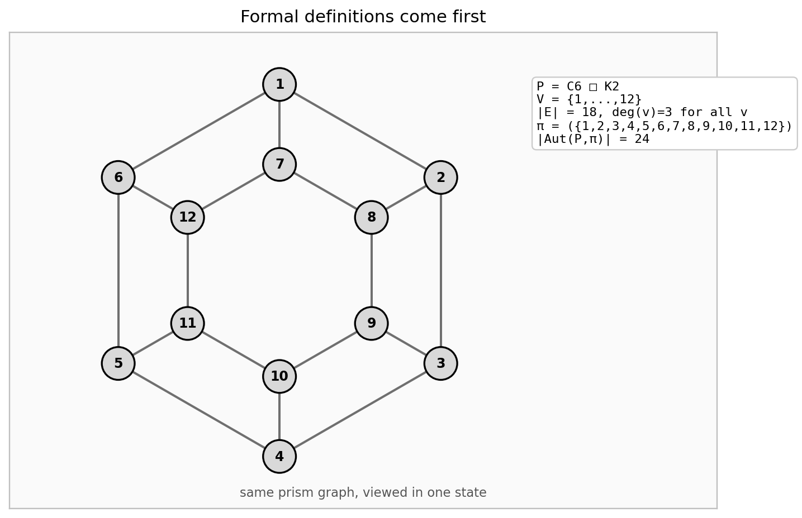
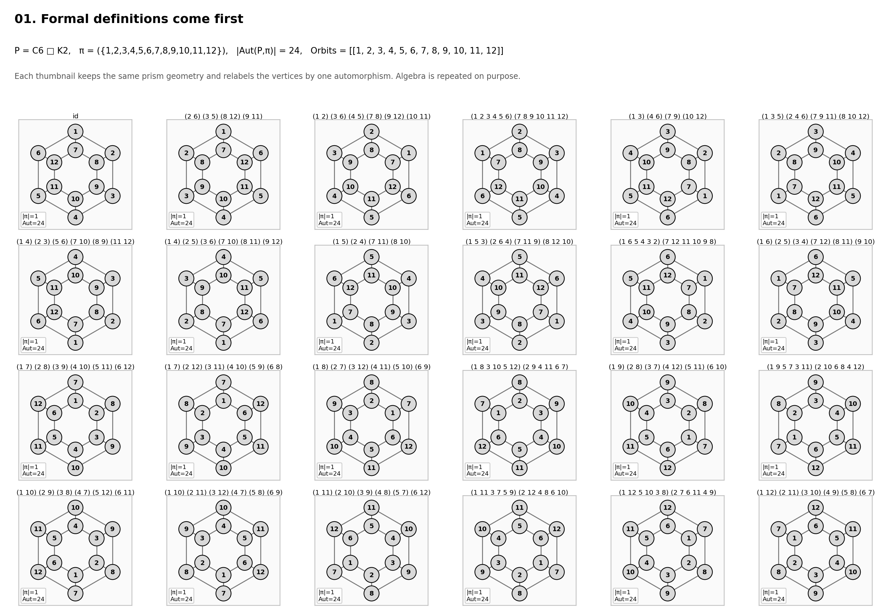
2. Why the search tree matters
Here I picture the search tree as repeated refinement: I split one cell, refine, and keep going until the colouring becomes rigid enough to compare branches or record automorphisms.
$$\pi_0=(V),\qquad \pi_1=(\{1\},V\setminus\{1\}),\qquad \pi_{\mathrm{disc}}=(\{1\},\{2\},\dots,\{12\}).$$
$$P=C_6\mathbin{\square} K_2,\qquad |V(P)|=12,\qquad |E(P)|=18,\qquad \deg(v)=3\text{ for all }v.$$
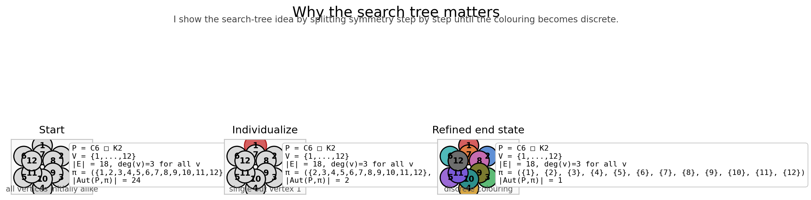
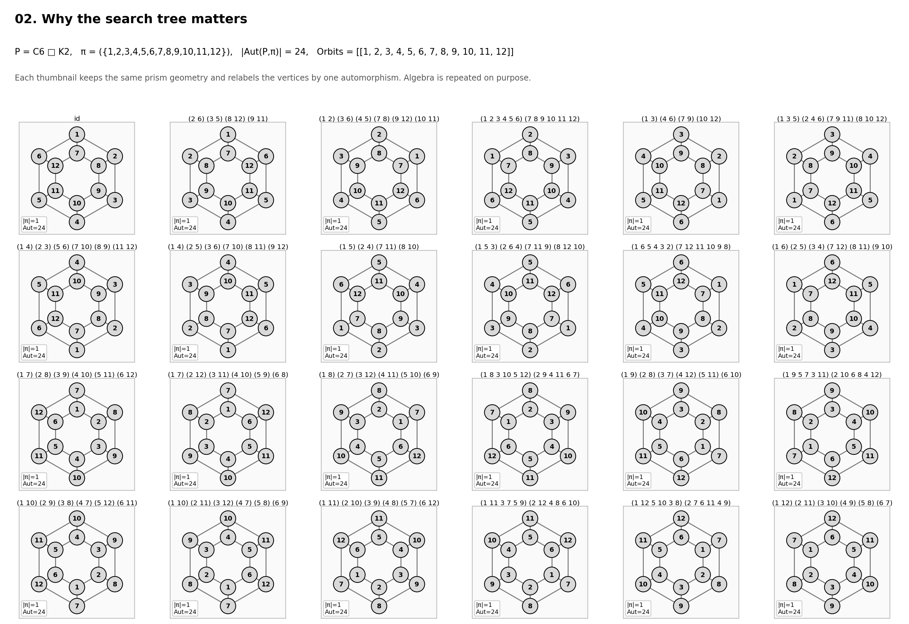
3. A self-contained strategy section
I read this part of the paper as a strategy map: start with a graph, impose an ordered colouring, refine it, and use the refined states to compute automorphisms and canonical forms.
$$G \longrightarrow (G,\pi) \longrightarrow \text{refinement/search tree} \longrightarrow \text{Aut}(G,\pi) \text{ and } C(G,\pi).$$
$$P=C_6\mathbin{\square} K_2,\qquad |V(P)|=12,\qquad |E(P)|=18,\qquad \deg(v)=3\text{ for all }v.$$
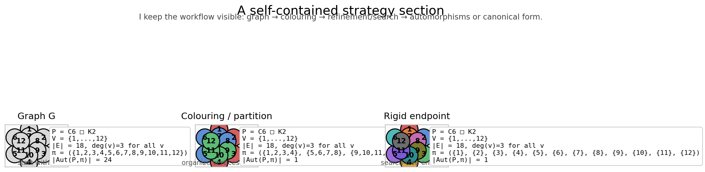
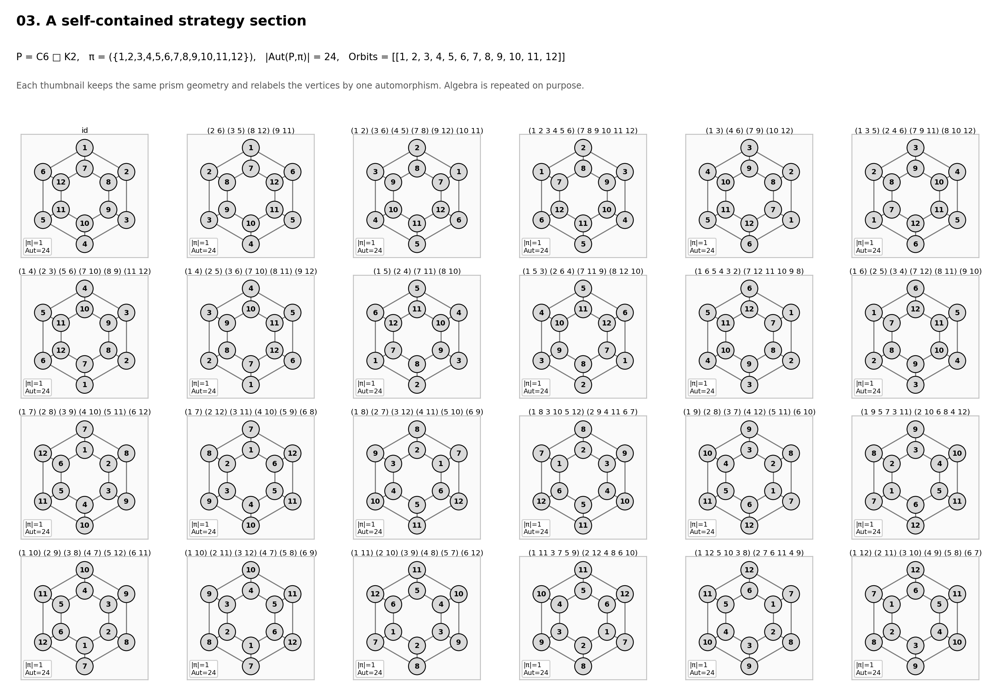
4. The ambient set of graphs
The paper writes $\mathcal G_n$ for all graphs on $V=\{1,2,\dots,n\}$. In my example I keep $n=12$ fixed and work inside that universe throughout.
$$\mathcal G_{12}=\{G: V(G)=\{1,2,\dots,12\}\}.$$
$$P=C_6\mathbin{\square} K_2,\qquad |V(P)|=12,\qquad |E(P)|=18,\qquad \deg(v)=3\text{ for all }v.$$
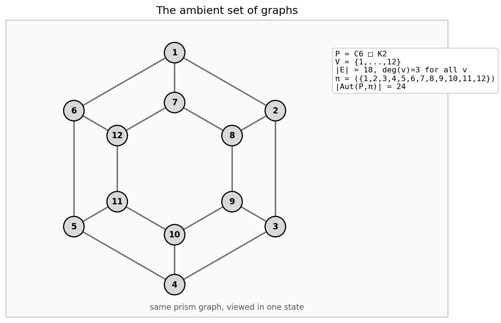
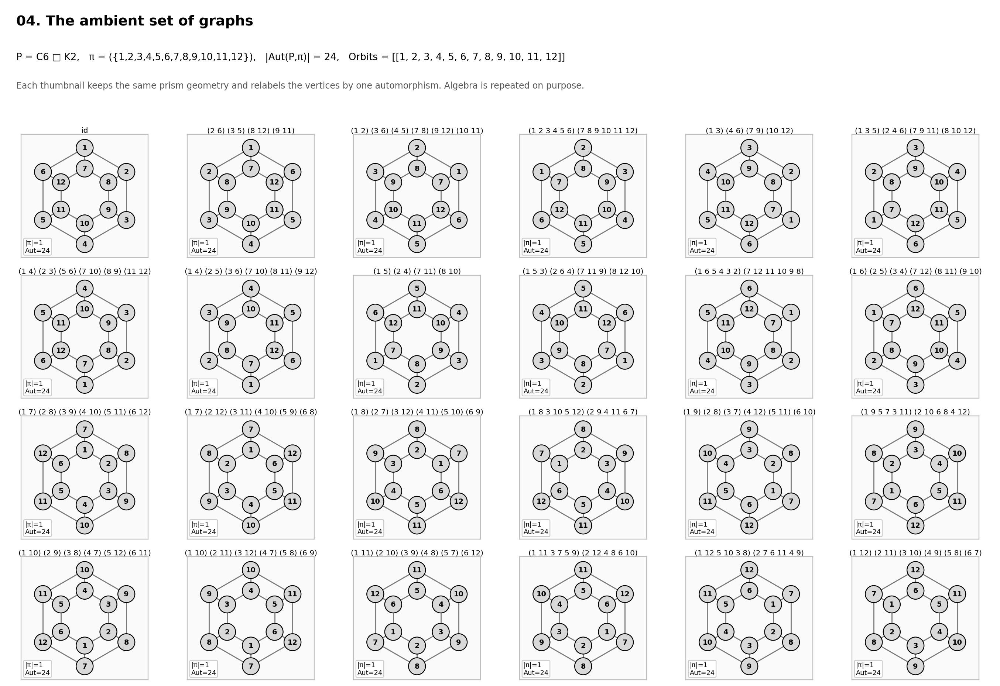
5. What a colouring is
I treat a colouring as an ordered partition. In the example below, vertices $1$ to $4$ form the first cell, vertices $5$ to $8$ the second, and vertices $9$ to $12$ the third.
$$\pi=(\{1,2,3,4\},\{5,6,7,8\},\{9,10,11,12\}),\qquad |\pi|=3.$$
$$P=C_6\mathbin{\square} K_2,\qquad |V(P)|=12,\qquad |E(P)|=18,\qquad \deg(v)=3\text{ for all }v.$$
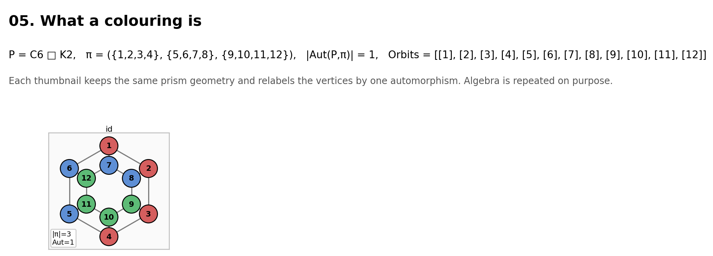
6. The number of colours
For my running partition, the colouring has three cells, so $|\pi|=3$. The important point is that the colour classes are ordered, not merely collected as an unordered family.
$$|\pi|=3,\qquad \pi=(C_1,C_2,C_3).$$
$$P=C_6\mathbin{\square} K_2,\qquad |V(P)|=12,\qquad |E(P)|=18,\qquad \deg(v)=3\text{ for all }v.$$
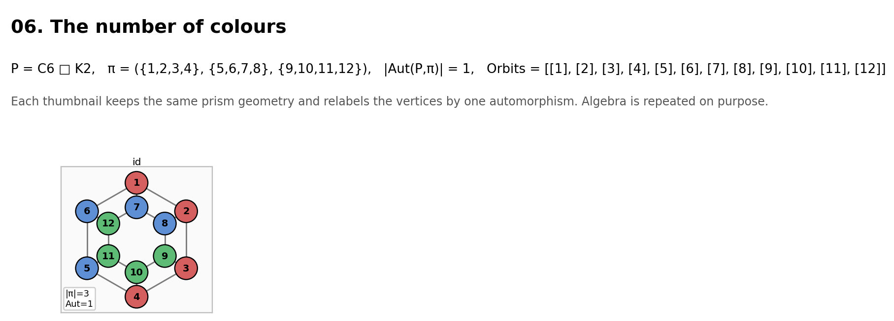
7. What a cell is
In my three-cell example, the middle cell is $C_2=\{5,6,7,8\}$. Thinking cell-by-cell makes refinement much easier to see.
$$C_1=\{1,2,3,4\},\quad C_2=\{5,6,7,8\},\quad C_3=\{9,10,11,12\}. $$
$$P=C_6\mathbin{\square} K_2,\qquad |V(P)|=12,\qquad |E(P)|=18,\qquad \deg(v)=3\text{ for all }v.$$
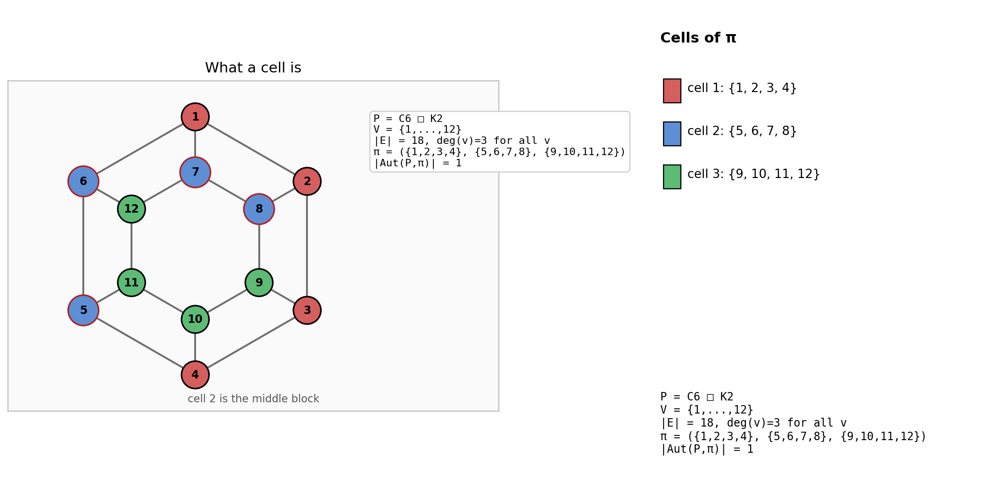
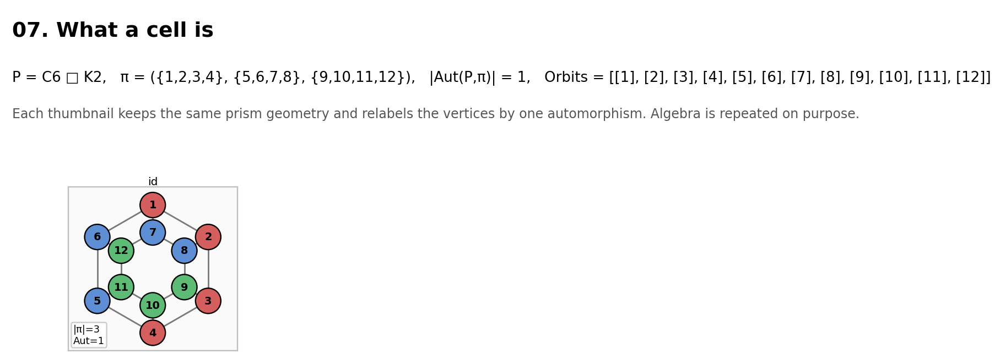
8. Discrete colourings
A discrete colouring removes all ambiguity by isolating every vertex. Once I reach this state, every vertex has its own position in the ordering.
$$\pi_{\mathrm{disc}}=(\{1\},\{2\},\dots,\{12\}),\qquad |\pi_{\mathrm{disc}}|=12.$$
$$P=C_6\mathbin{\square} K_2,\qquad |V(P)|=12,\qquad |E(P)|=18,\qquad \deg(v)=3\text{ for all }v.$$
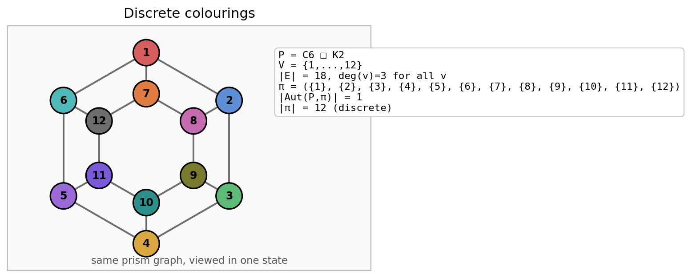
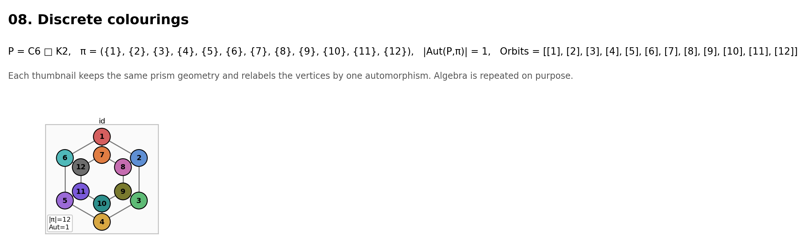
9. Discrete colouring as a permutation
Because each cell is a singleton, I can read the discrete colouring as the ordered list $(1,2,\dots,12)$, or as any relabelled copy obtained by a permutation $g$.
$$g=(1\;4)(2\;5)(3\;6)(7\;10)(8\;11)(9\;12),\qquad G^g ext{ is the same graph with relabelled vertices.}$$
$$P=C_6\mathbin{\square} K_2,\qquad |V(P)|=12,\qquad |E(P)|=18,\qquad \deg(v)=3\text{ for all }v.$$
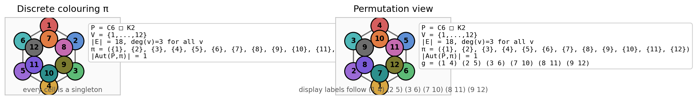
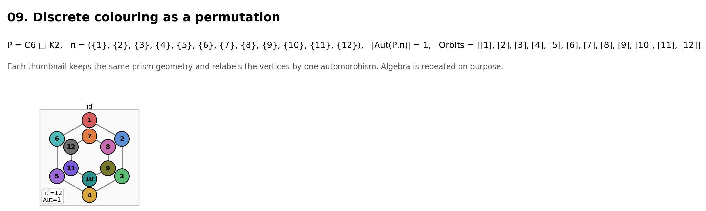
10. Finer than or equal to
Clarification: containment of each finer cell in a coarse cell is necessary. Ordered refinement also requires all fragments of each old cell to remain contiguous and in the original cell order. The displayed example satisfies both conditions.
I compare a coarse three-cell colouring with a finer five-cell colouring. Every finer cell sits inside one coarse cell, so the order relation is visible directly on the partition boxes.
$$\pi=(\{1,2,3,4\},\{5,6,7,8\},\{9,10,11,12\}),$$ $$\pi'=(\{1,2\},\{3,4\},\{5,6\},\{7,8\},\{9,10,11,12\}),\qquad \pi'\preceq \pi.$$
$$P=C_6\mathbin{\square} K_2,\qquad |V(P)|=12,\qquad |E(P)|=18,\qquad \deg(v)=3\text{ for all }v.$$
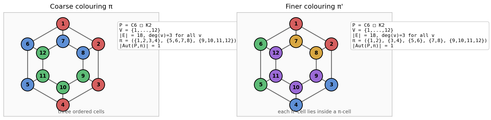
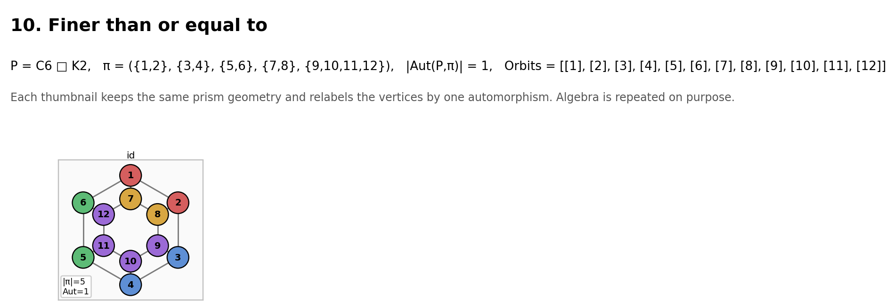
11. Subset intuition for finer colourings
Clarification: containment of each finer cell in a coarse cell is necessary. Ordered refinement also requires all fragments of each old cell to remain contiguous and in the original cell order. The displayed example satisfies both conditions.
I use the same pair $(\pi',\pi)$ here, but now I stress the subset picture: no finer cell crosses a coarse-cell boundary.
$$\forall C'\in \pi'\;\exists C\in \pi\text{ such that }C'\subseteq C.$$
$$P=C_6\mathbin{\square} K_2,\qquad |V(P)|=12,\qquad |E(P)|=18,\qquad \deg(v)=3\text{ for all }v.$$

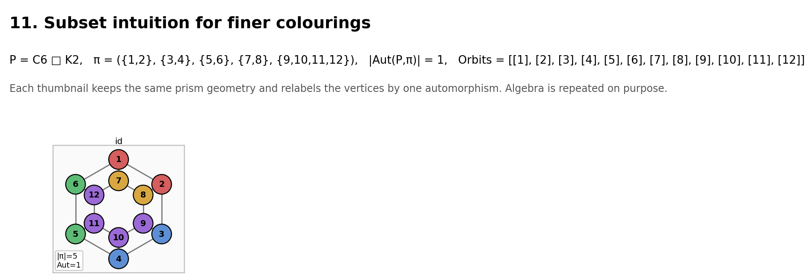
12. Why colourings are also partitions
I keep the partition language visible because it is exactly what I see in the figures. The only caveat is that the cells come with an order.
$$V=\bigsqcup_{i=1}^{|\pi|} C_i,\qquad \pi=(C_1,C_2,\dots,C_{|\pi|}).$$
$$P=C_6\mathbin{\square} K_2,\qquad |V(P)|=12,\qquad |E(P)|=18,\qquad \deg(v)=3\text{ for all }v.$$
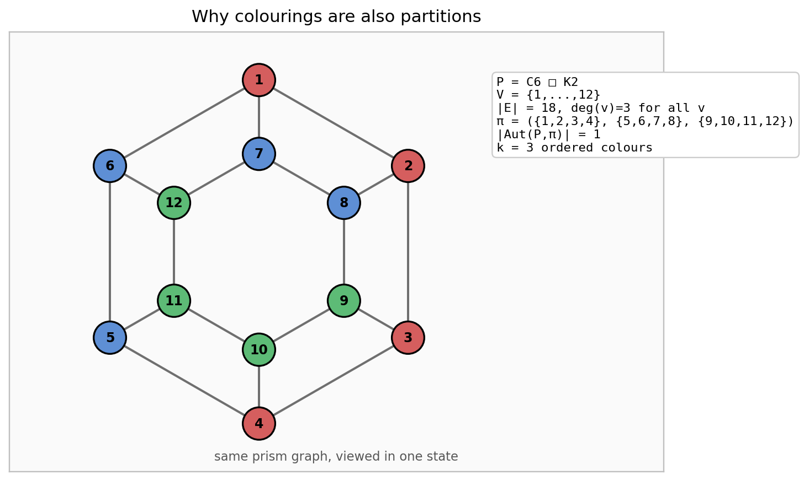
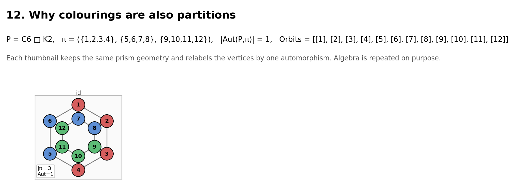
13. Why colour order still matters
Two ordered partitions can have the same underlying blocks and still count as different colourings if I swap the order of the blocks. I make that distinction explicit in the algebra box.
$$\pi=(A,B,C),\qquad \sigma=(B,A,C),\qquad \pi \neq \sigma ext{ as ordered colourings.}$$
$$P=C_6\mathbin{\square} K_2,\qquad |V(P)|=12,\qquad |E(P)|=18,\qquad \deg(v)=3\text{ for all }v.$$
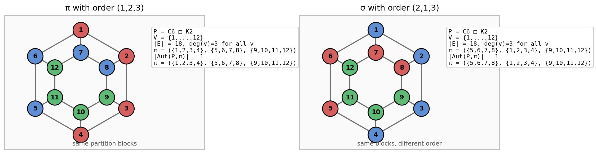
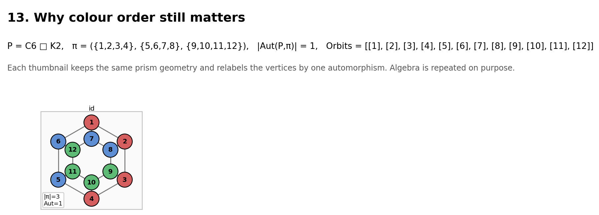
14. What a coloured graph is
From this point on, I frequently work with the pair $(P,\pi)$ rather than with $P$ alone, because the colouring changes which symmetries remain valid.
$$ (P,\pi),\qquad P=C_6\mathbin{\square} K_2,\quad \pi=(\{1,2,3,4\},\{5,6,7,8\},\{9,10,11,12\}). $$
$$P=C_6\mathbin{\square} K_2,\qquad |V(P)|=12,\qquad |E(P)|=18,\qquad \deg(v)=3\text{ for all }v.$$
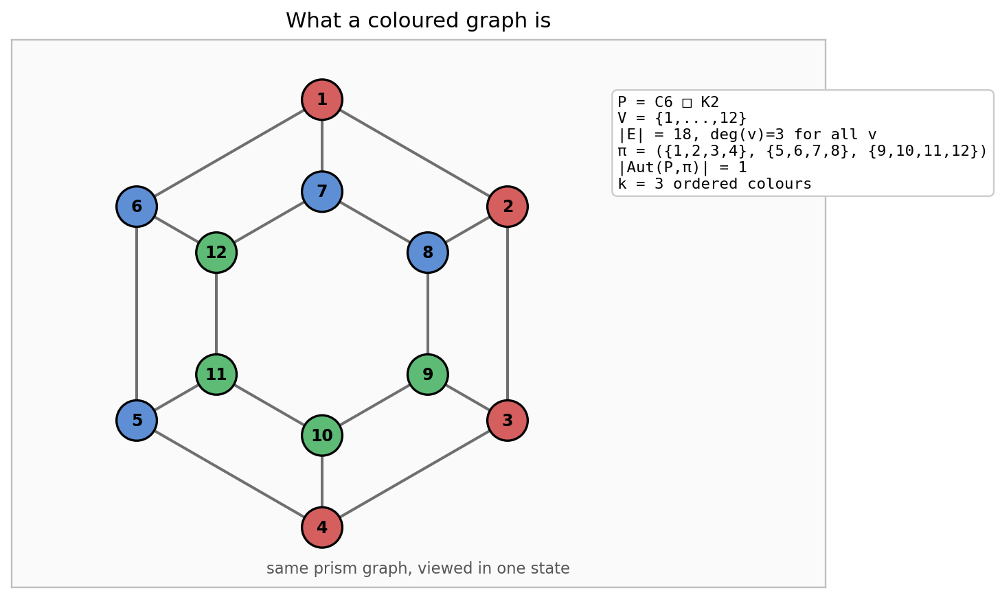
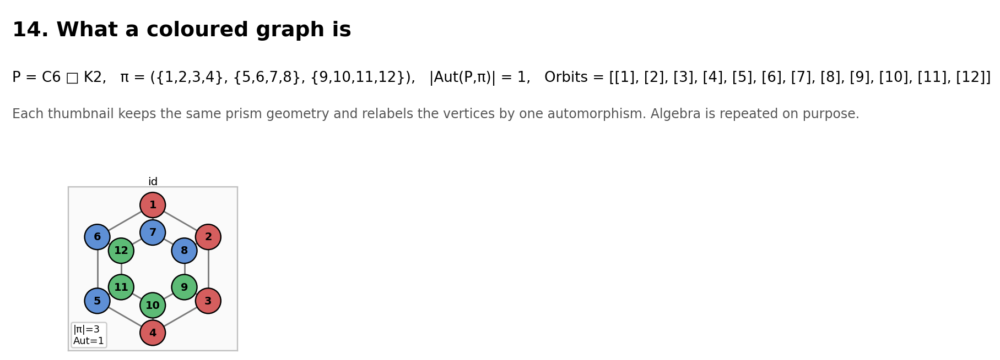
15. The symmetric group
The paper writes $S_n$ for all permutations of the vertex set. I use a specific permutation $\rho$ to make the action visible on the prism graph.
$$\rho=(1\;2\;3\;4\;5\;6)(7\;8\;9\;10\;11\;12)\in S_{12}. $$
$$P=C_6\mathbin{\square} K_2,\qquad |V(P)|=12,\qquad |E(P)|=18,\qquad \deg(v)=3\text{ for all }v.$$
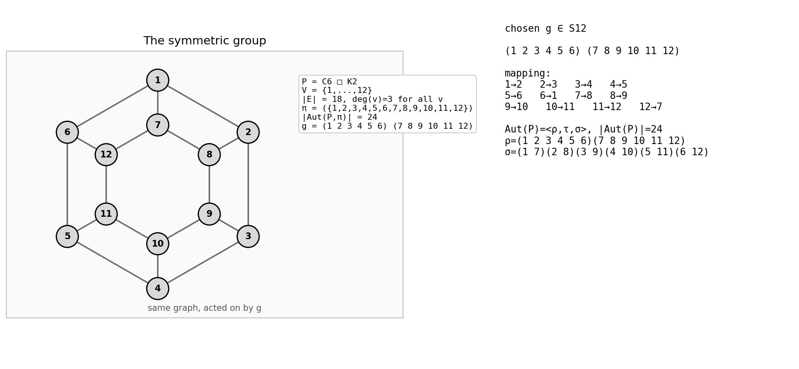
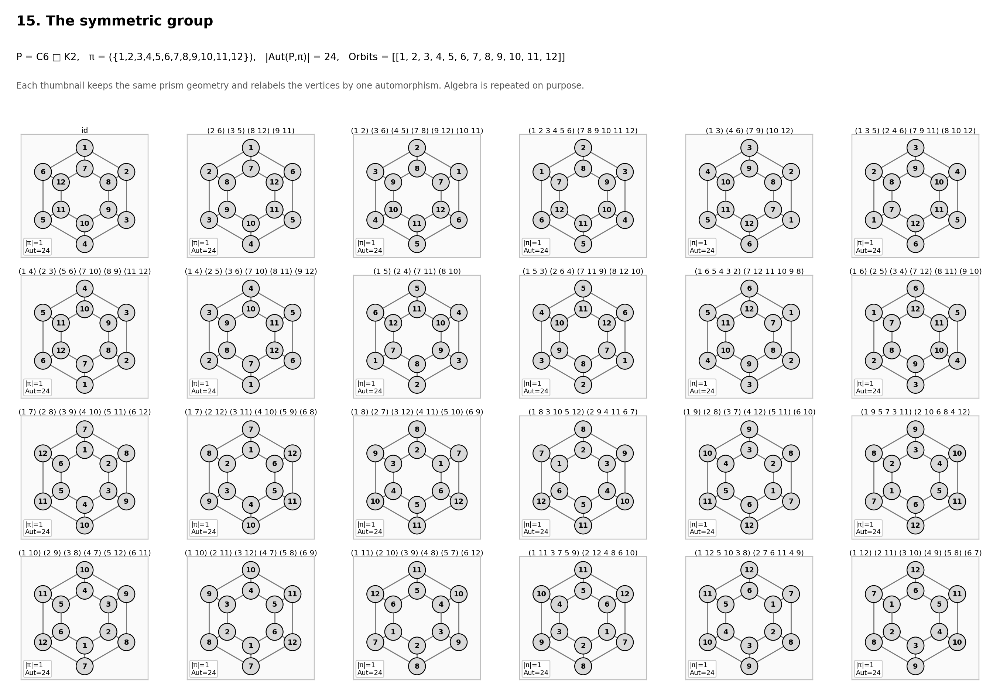
16. Exponent notation for actions
I keep the exponent notation because it matches the paper. For instance, under the rotation $\rho^2$, the vertex $1$ moves to $3$ and the vertex $7$ moves to $9$.
$$1^{\rho^2}=3,\qquad 7^{\rho^2}=9.$$
$$P=C_6\mathbin{\square} K_2,\qquad |V(P)|=12,\qquad |E(P)|=18,\qquad \deg(v)=3\text{ for all }v.$$
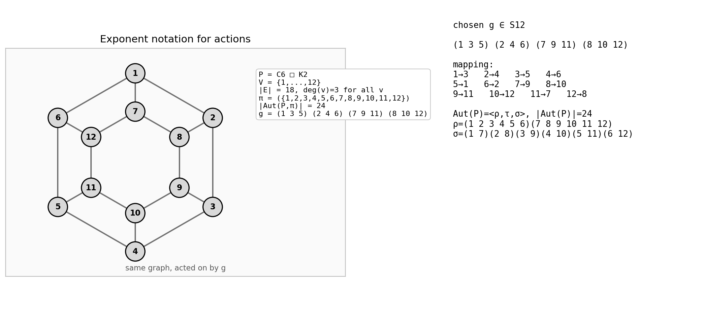
17. Image of a vertex under a permutation
To make the notation concrete, I highlight one vertex and its image. This is the smallest nontrivial example of the action.
$$g=\rho^3,\qquad 1^g=4.$$
$$P=C_6\mathbin{\square} K_2,\qquad |V(P)|=12,\qquad |E(P)|=18,\qquad \deg(v)=3\text{ for all }v.$$
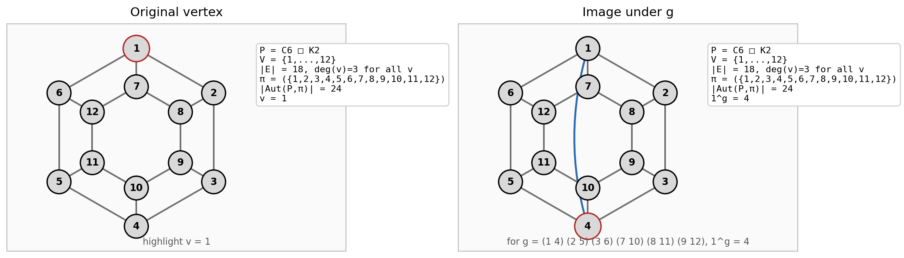
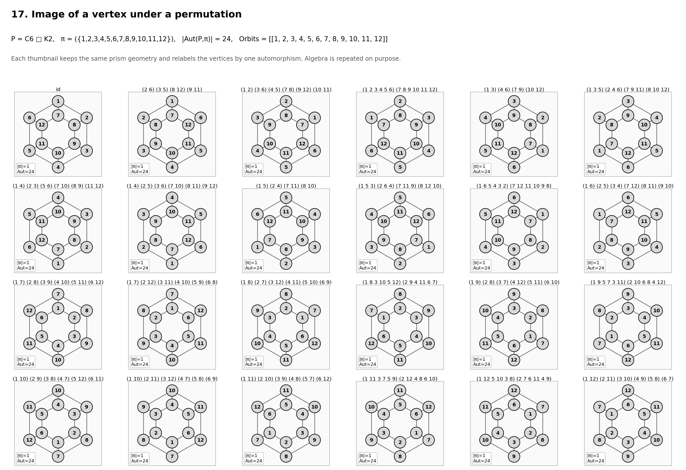
18. Induced action on more complicated objects
Once the vertex action is fixed, everything else follows automatically. Here I show the induced action on a single edge.
$$g=\rho^3,\qquad \{1,2\}^g=\{4,5\}. $$
$$P=C_6\mathbin{\square} K_2,\qquad |V(P)|=12,\qquad |E(P)|=18,\qquad \deg(v)=3\text{ for all }v.$$
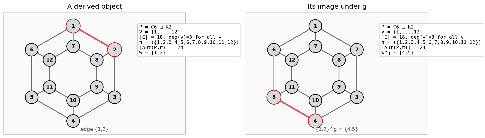
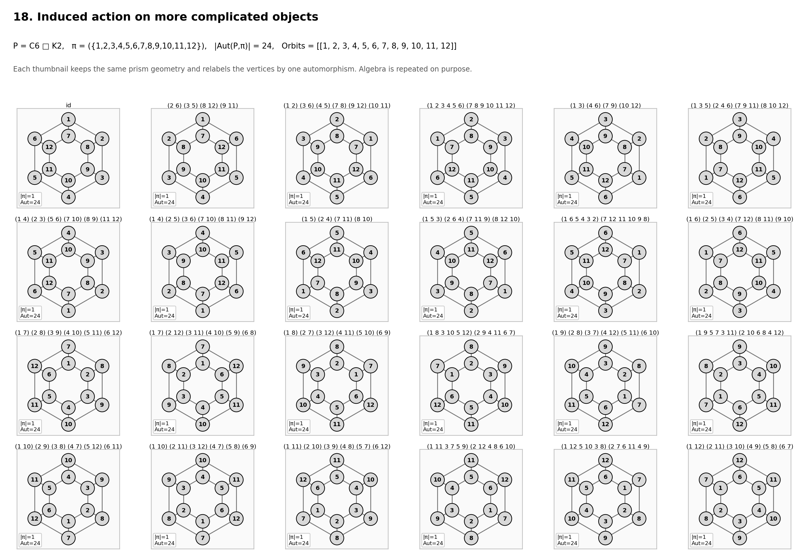
19. Action on subsets
I use the three-vertex set $W=\{1,2,3\}$ so that the image is easy to read in the figure and in the formula at the same time.
$$W=\{1,2,3\},\qquad W^g=\{4,5,6\} ext{ for } g=\rho^3.$$
$$P=C_6\mathbin{\square} K_2,\qquad |V(P)|=12,\qquad |E(P)|=18,\qquad \deg(v)=3\text{ for all }v.$$
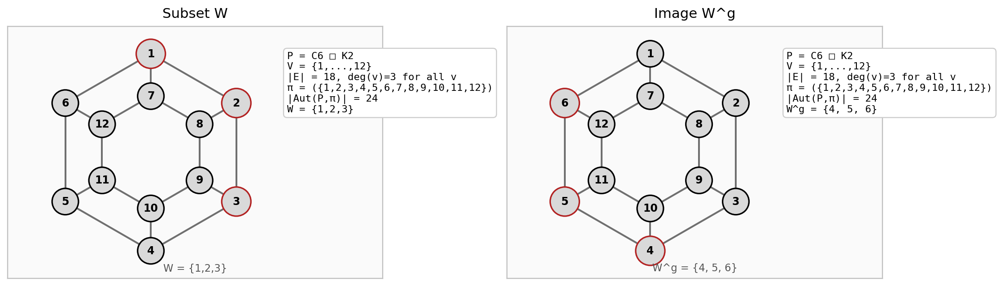
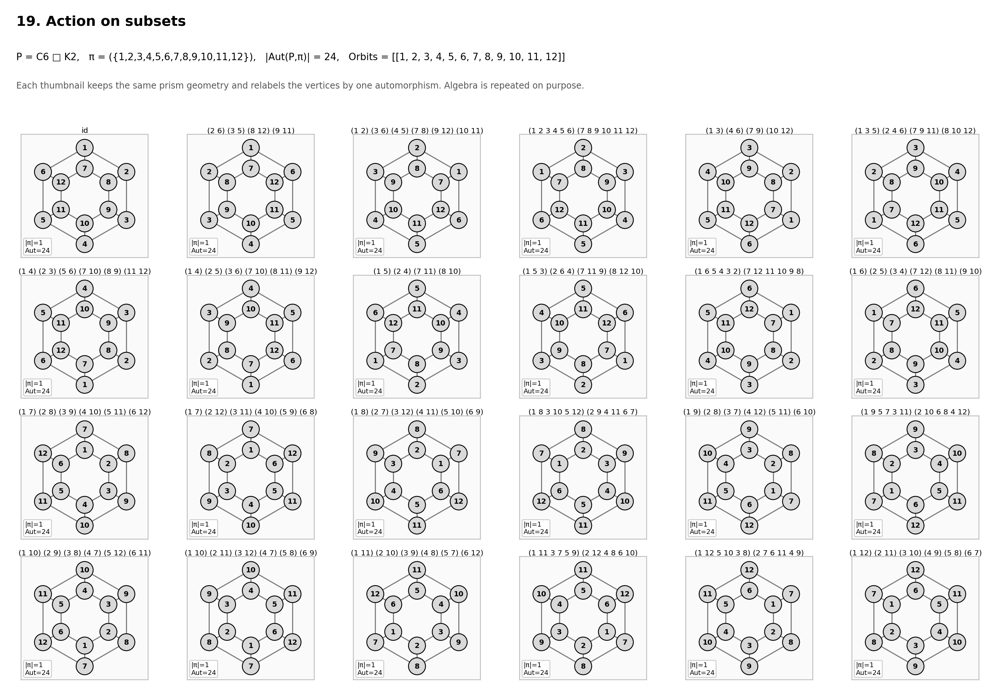
20. Action on graphs
The figure on the right keeps the same geometry but changes the displayed labels. That is exactly the paper’s idea of $G^g$.
$$G^g=(V,E^g),\qquad E^g=\{\{u^g,v^g\}:\{u,v\}\in E\}. $$
$$P=C_6\mathbin{\square} K_2,\qquad |V(P)|=12,\qquad |E(P)|=18,\qquad \deg(v)=3\text{ for all }v.$$
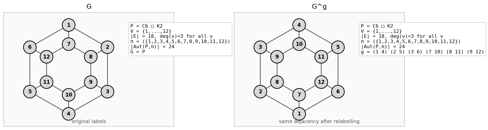
21. Discrete colouring gives G^π
In the discrete case, the colouring itself encodes a vertex order. I use that to read the graph as a relabelled copy $G^\pi$.
$$\pi_{\mathrm{disc}}=(\{1\},\{2\},\dots,\{12\})\quad\leadsto\quad G^{\pi}. $$
$$P=C_6\mathbin{\square} K_2,\qquad |V(P)|=12,\qquad |E(P)|=18,\qquad \deg(v)=3\text{ for all }v.$$
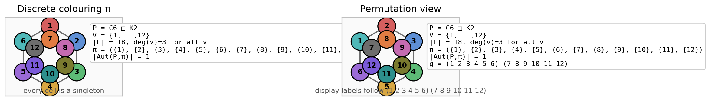
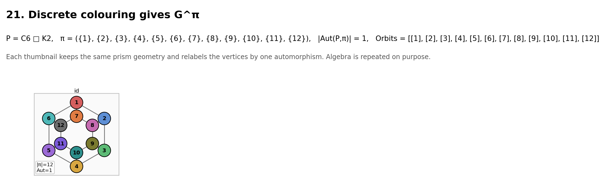
22. Action on colourings
Convention correction: the printed formula in II §2.2(c) is recorded in the main crosswalk. The live code and formula here transport each colour together with its vertex. The preserved PNG may retain the earlier expression.
I keep the graph fixed and move only the colour labels through the action. This is where ordered cells become especially important.
$$\pi^g(v^g)=\pi(v),\qquad\pi^g(w)=\pi(w^{g^{-1}}).$$
$$P=C_6\mathbin{\square} K_2,\qquad |V(P)|=12,\qquad |E(P)|=18,\qquad \deg(v)=3\text{ for all }v.$$
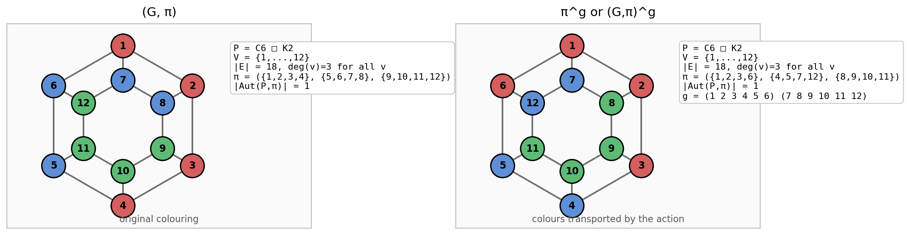
23. Action on coloured graphs
The ordered pair notation makes this compact: the permutation acts simultaneously on the adjacency structure and on the colouring.
$$ (G,\pi)^g=(G^g,\pi^g). $$
$$P=C_6\mathbin{\square} K_2,\qquad |V(P)|=12,\qquad |E(P)|=18,\qquad \deg(v)=3\text{ for all }v.$$
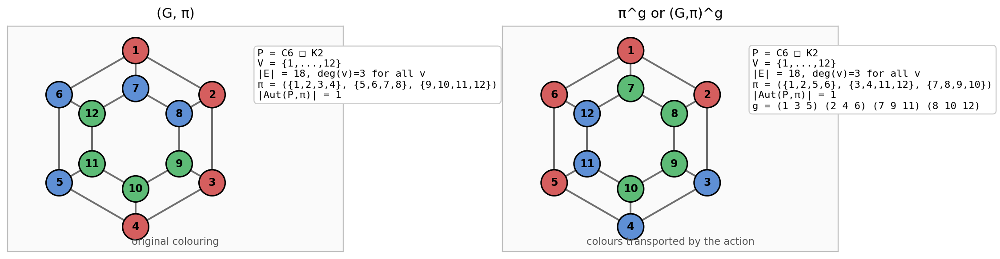
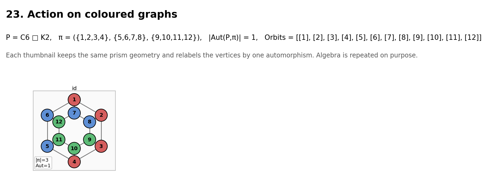
24. Isomorphism of coloured graphs
In the figure pair I use the same prism graph with two differently displayed labelings. The algebra says that a suitable $g$ carries one coloured graph onto the other.
$$ (G,\pi)\cong (G',\pi') \iff \exists g\in S_{12} \text{ such that } (G',\pi')=(G,\pi)^g. $$
$$P=C_6\mathbin{\square} K_2,\qquad |V(P)|=12,\qquad |E(P)|=18,\qquad \deg(v)=3\text{ for all }v.$$
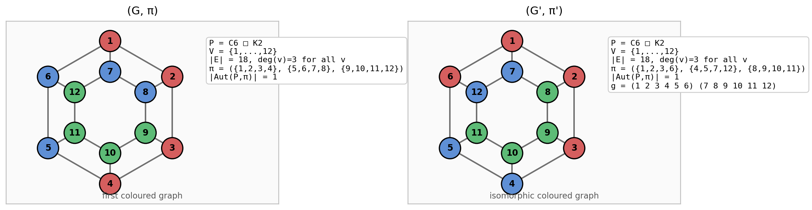
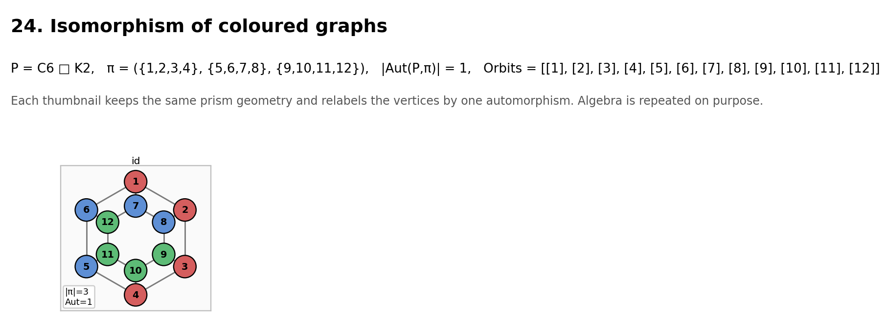
25. What the isomorphism itself is
I find it useful to keep the witness map visible, because the paper’s abstract statement is really about this concrete relabelling.
$$g:(G,\pi)\to(G',\pi'),\qquad g ext{ is the actual isomorphism.}$$
$$P=C_6\mathbin{\square} K_2,\qquad |V(P)|=12,\qquad |E(P)|=18,\qquad \deg(v)=3\text{ for all }v.$$
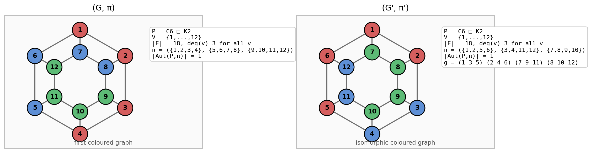
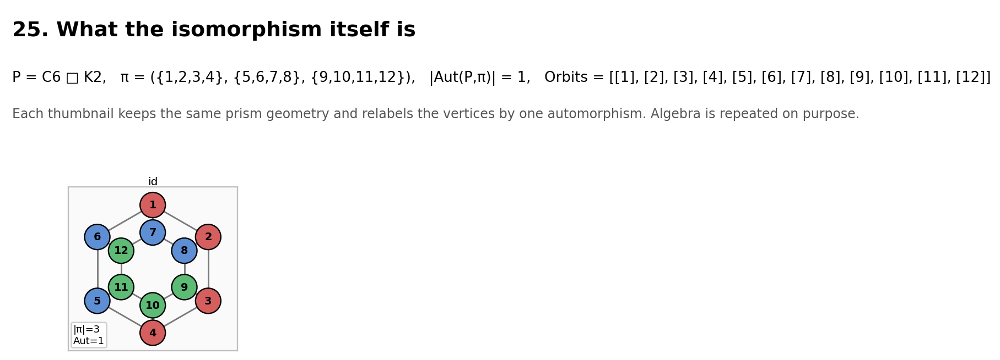
26. Automorphism group
For the uncoloured prism graph, I recover 24 automorphisms. The thumbnails collect them into one place so the group feels concrete rather than symbolic.
$$\mathrm{Aut}(P)=\langle \rho,\tau,\sigma\rangle,\qquad |\mathrm{Aut}(P)|=24,$$ $$\rho^6=\tau^2=\sigma^2=1,\qquad \tau \rho \tau = \rho^{-1},\qquad [\sigma,\rho]=[\sigma,\tau]=1.$$
$$P=C_6\mathbin{\square} K_2,\qquad |V(P)|=12,\qquad |E(P)|=18,\qquad \deg(v)=3\text{ for all }v.$$
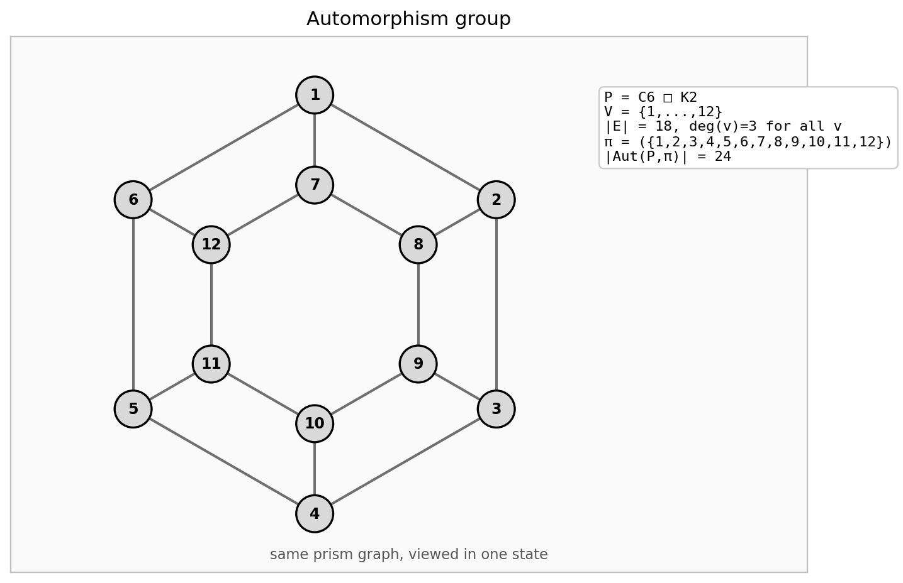
27. Canonical form
I use a restricted selection rule on colourings of the fixed labelled prism P. Among colourings in the Aut(P)-orbit, I choose the lexicographically smallest colour sequence. This is a canonical representative for that restricted action, not a general canonical labelling of arbitrary graph inputs.
$$C_P(\pi)=\min_{g\in \mathrm{Aut}(P)} (P^g,\pi^g)\quad ext{under my chosen ordering rule.}$$
$$P=C_6\mathbin{\square} K_2,\qquad |V(P)|=12,\qquad |E(P)|=18,\qquad \deg(v)=3\text{ for all }v.$$
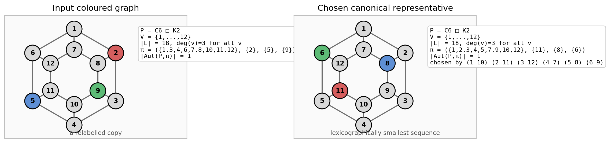
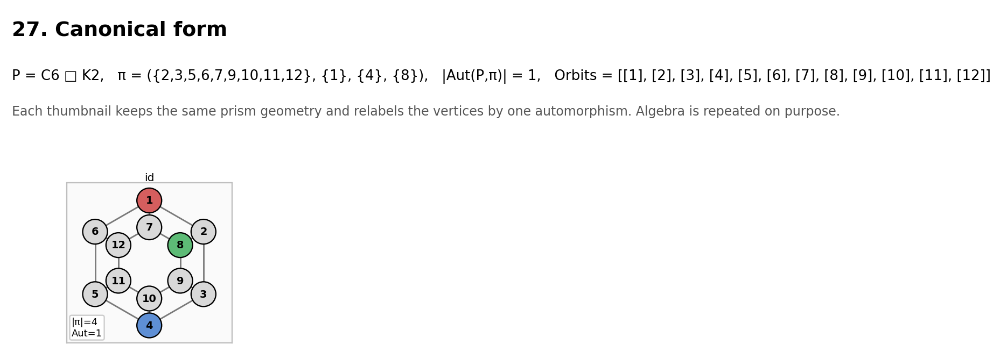
28. Unique representative of the class
Scope: the general canonical-form theorem is proved in the main section. These historical images demonstrate the restricted orbit problem for colourings of one fixed prism. Repeated matrices here do not certify a general S₁₂ canonical algorithm.
The two figures start from two different copies, but the third figure shows the same canonical representative for both. This is the paper’s uniqueness idea in one glance.
$$C(G,\pi)=C(G',\pi') ext{ whenever } (G,\pi)\cong(G',\pi').$$
$$P=C_6\mathbin{\square} K_2,\qquad |V(P)|=12,\qquad |E(P)|=18,\qquad \deg(v)=3\text{ for all }v.$$
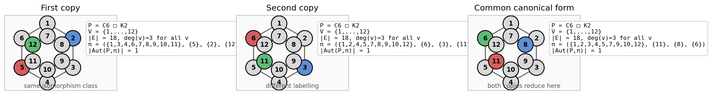
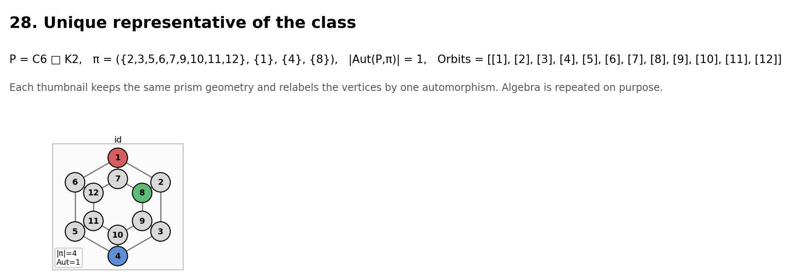
29. Why canonical forms solve comparison
Scope: the general canonical-form theorem is proved in the main section. These historical images demonstrate the restricted orbit problem for colourings of one fixed prism. Repeated matrices here do not certify a general S₁₂ canonical algorithm.
This is the pay-off. Once I can compute a canonical form, I can replace a search for some hidden isomorphism by a direct comparison of two outputs.
$$ (G,\pi)\cong(G',\pi') \iff C(G,\pi)=C(G',\pi'). $$
$$P=C_6\mathbin{\square} K_2,\qquad |V(P)|=12,\qquad |E(P)|=18,\qquad \deg(v)=3\text{ for all }v.$$
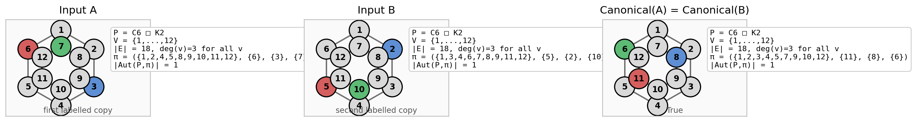
Mathematical glossary
Notation is grouped by role. Expand the original-notation notes in the main sections for source-specific differences. Symbols in the crosswalk refer back to these definitions.
- Graph $G=(V,E)$
- A finite simple undirected graph; no loops or parallel edges in the executable tools.
- $\mathcal G_n$
- All labelled simple graphs on $[n]$; cardinality $2^{\binom n2}$.
- $A_G$
- Binary symmetric adjacency matrix with zero diagonal.
- $N_G(v)$ and $d_G(v,W)$
- Neighbourhood of v; number of its neighbours lying in W.
- $S_n$
- Symmetric group of all bijections on [n]. A displayed one-line map lists the image of each old vertex.
- $G^g$
- Graph obtained by sending each edge’s endpoints through g.
- $\pi$, cells, and $|\pi|$
- Surjective ordered colouring, its nonempty colour classes, and their number.
- Discrete colouring
- Every cell is singleton; the colouring maps each old vertex to its new colour number.
- $\preceq$
- Order-preserving refinement; stronger than containment of unordered cells.
- Equitable partition
- Every cell has constant neighbour counts into every cell.
- $I$ and $F$
- Individualization in situ, and the active-cell equitable refiner.
- $R(G,\pi_0,\nu)$
- Derived colouring for a sequence of choices. In I, the symbol R instead names the active-cell refiner.
- $T$ and $\mathcal T$
- Target-cell selector and the search tree, kept distinct on this page.
- $\operatorname{Aut}(G,\pi)$
- Automorphisms preserving the graph and every ordered colour class.
- Orbit
- All images of an element under the chosen group or subgroup.
- Pointwise stabilizer $\Gamma_{(W)}$
- Group elements fixing every vertex in W individually.
- Generators
- A subset whose finite compositions and inverses produce the entire group; not the full element list.
- $\phi$
- Node invariant satisfying the paper’s descendant-order, terminal-equality, and relabelling conditions.
- Canonical form $C$
- An isomorphic output constant across an isomorphism class under a specified convention.
- Partition nest / $\Lambda$
- I’s ordered refinement history and label-invariant indicator; translated to sequence states and prefix invariants in the later framework.
References and research provenance
- Brendan D. McKay (1981). Practical Graph Isomorphism. Congressus Numerantium 30, 45–87. Preserved local PDF · Author’s copy. Original algorithm references here use its section and theorem numbers, with printed page numbers.
- Brendan D. McKay and Adolfo Piperno (2014). Practical Graph Isomorphism, II. Journal of Symbolic Computation 60, 94–112. DOI: 10.1016/j.jsc.2013.09.003 · 2013 preprint, arXiv:1301.1493 · Preserved local PDF. The supplied PDF’s revision footer reads November 27, 2024; its internal pages are the locators used here. It is not mislabelled here as an untouched 2013 preprint.
- Nauty and Traces, official project. Software and documentation. The browser mathematics is independently written educational code. No installed production solver is required, and no production-solver performance claim is inferred from it.
- Brendan McKay, combinatorial data. Simple graph catalogues and counts, checked October 29, 2026. The project bundles graph6 catalogues for orders 6, 7, and 8, retaining their original contents and recording source URLs and SHA-256 checksums.
- Brendan D. McKay (1998). Isomorph-free exhaustive generation. Journal of Algorithms 26, 306–324. DOI: 10.1006/jagm.1997.0898. Additional literature for canonical construction paths; the conceptual augmentation discussion is explicitly separate from the two primary papers’ executable reconstruction.
Additional Technical Details — implementation, omissions, and reproducibility
The site has no build step and uses static HTML, CSS, classic JavaScript, SVG, local JSON/graph6 data, and a vendored MathJax 3.2.2 bundle for offline mathematical typesetting. The overview starts paused, supports deterministic seeking, and respects the reader’s choice to avoid playback. SVG controls and tree nodes have keyboard targets; animation and chart descriptions remain available without playback.
Web Workers keep live generation, imported-graph searches, and exhaustive baselines off the UI thread. Use a local HTTP server for those features and catalogue loading; direct-file reading still displays the mathematical text, local figures, typeset equations, and the synchronous demonstrations.
Not implemented as production software: the full 1981 Algorithm 2.31, implicit-automorphism shortcuts, nauty’s dense/sparse bitset engineering, random Schreier maintenance, full Traces trace dominance and experimental-path scheduling, low-degree special cases, P_A/P_B search execution, and canonical augmentation/geng. Their dependencies, guarantees, and relationship to the executable subset are explained above. The browser implements exact finite educational algorithms within declared limits.
Research remains a local review draft. No repository index entry was added, and no commit, push, or publication is part of this implementation.